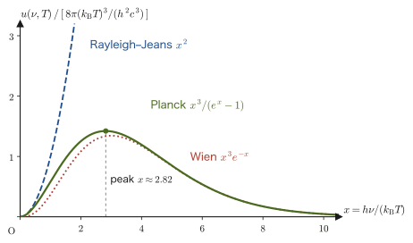
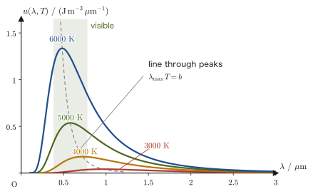
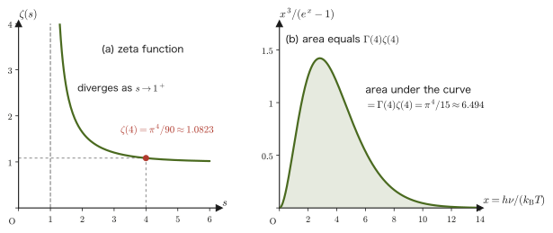
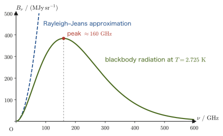
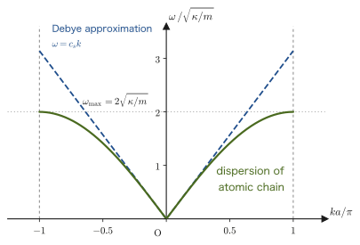
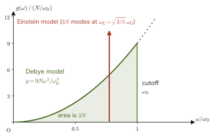
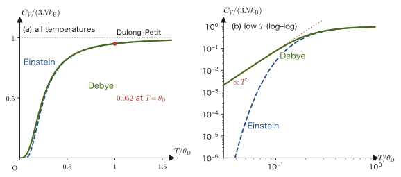

Chapter 53Statistics of Photons and Phonons — Black-Body Radiation and the Debye Model
When an iron rod is placed in a fire and heated, it is at first dark, then begins to glow a dull red, and as it is heated further it changes to orange, yellow, and finally a whitish light. The same reason explains why some stars in the night sky are red and others bluish white: the color of a star is determined by its surface temperature. In high school physics we learned that light is also a stream of particles called “photons,” and that the energy of a single photon is $E=h\nu$ ($h$ is the Planck constant and $\nu$ is the frequency). In this chapter we apply the statistical mechanics of the preceding chapters to a “collection of photons” confined in a box, and derive from scratch how the color and brightness of the light from a heated body (black-body radiation) are determined by the temperature alone.
The result is remarkably rich. The energy density of light is proportional to the fourth power of the temperature (the Stefan–Boltzmann law). The wavelength at the peak of the spectrum is inversely proportional to the temperature (Wien's displacement law). And we arrive at a “fossil” of the Big Bang: the whole universe is filled with black-body radiation at about $2.725\ \mathrm{K}$ (the cosmic microwave background).
In the second half we apply the same pattern of calculation to the vibrations of atoms in a solid. The vibrations of the atoms in a solid are a superposition of sound waves (elastic waves) propagating through the whole crystal, and the quanta of these waves are called “phonons.” With a calculation almost identical to the one for photons, we derive the experimental fact that the Einstein model of Chapter 51 could not explain, namely that “the specific heat at very low temperatures is proportional to $T^3$” (Debye's $T^3$ law). The integral $\int_0^\infty x^p/(e^x-1)\,\dd x$ that we prepared in Chapter 47 comes into its own here for the first time. This chapter is also the final chapter of Part VII (Statistical Mechanics), and at the end we look back over Chapters 47–53 as a whole.
- The picture of the electromagnetic-wave modes in a cavity as a collection of harmonic oscillators, and the fact that the chemical potential is $\mu=0$ because the number of photons is not conserved
- Counting the modes (the density of states $g(\omega)=V\omega^2/(\pi^2c^3)$) and the statistical-mechanical derivation of Planck's radiation law $u(\nu,T)=\dfrac{8\pi h\nu^3}{c^3}\dfrac{1}{e^{h\nu/k_{\mathrm B}T}-1}$ (correspondence with “University Mathematics” (AD 02), Chapter 49)
- Deriving Wien's displacement law $\lambda_{\max}T=2.898\times10^{-3}\ \mathrm{m\,K}$ from the transcendental equation $x=5(1-e^{-x})$, and estimating the colors and temperatures of the Sun, the human body, and an incandescent lamp
- Computing the Stefan–Boltzmann law and the constant $\sigma=\dfrac{2\pi^5k_{\mathrm B}^4}{15h^3c^2}$ from the integral $\Gamma(4)\zeta(4)=\pi^4/15$ of Chapter 47, and finding the pressure and entropy of the photon gas
- Estimating the photon number density, the energy density, and the peak frequency of the cosmic microwave background (about $2.725\ \mathrm{K}$)
- Lattice vibrations and phonons; the Debye model (the density of states, the Debye frequency $\omega_{\mathrm D}$, and the Debye temperature $\theta_{\mathrm D}$); the $T^3$ law for the low-temperature specific heat and the Dulong–Petit law at high temperature; comparison with the Einstein model
- That photons and phonons can be treated within the same framework of “Bose statistics + density of states + the integral of Chapter 47,” and an overview of the whole of Part VII
Source notes: This chapter supplements material not in the notes. Related notes: Yasuhide Mochizuki, Physics Notes: Statistical Mechanics.
53.1 The Photon Gas and the Chemical Potential $\mu=0$
53.1.1 Black bodies and cavity radiation
Every object emits electromagnetic waves according to its temperature. This is called thermal radiation. Our bodies at room temperature emit infrared rays, and when iron is heated to around $1000\ \mathrm{K}$, it begins to emit red visible light strongly in addition to the infrared rays. The intensity of the light emitted differs slightly depending on the properties of an object's surface (rough or smooth, and what material it is made of). However, if we consider an ideal body that absorbs all the light that falls on it, its thermal radiation has a universal form that does not depend on the material. An ideal body that absorbs all incident electromagnetic waves is called a black body.
Something that comes arbitrarily close to a black body in reality is easy to make. One simply makes a small hole in the wall of a box (a cavity) whose inside is a vacuum. Light that enters through the hole is reflected and absorbed many times at the walls, and is almost entirely absorbed before it can escape from the hole. The hole therefore becomes a “black surface” that absorbs the incident light almost perfectly. Conversely, if the walls are kept at a constant temperature $T$ and a sufficient time passes, the electromagnetic waves inside the cavity come to thermal equilibrium with the walls, and a little of the internal radiation peeks out through the hole. This is cavity radiation or black-body radiation (Figure 53.1).
Law 53.1: Universality of cavity radiation (a consequence of Kirchhoff's law of thermal radiation)
The spectrum of the electromagnetic waves in a cavity in thermal equilibrium (the distribution of energy over frequency) is determined by the temperature $T$ alone, independent of the wall material and of the shape of the cavity.
Why?: The reason the spectrum does not depend on the wall material
Suppose we make two cavities A and B of different materials and keep them at the same temperature $T$. If we connect A and B by a small window, they exchange light with each other. If the spectrum of the radiation in A differed from that in B, then at some frequencies net energy would flow from A to B, and at other frequencies it would flow in the opposite direction. By placing a suitable filter in the window, it would become possible for “only one of the cavities to rise in temperature by itself,” which means that heat would be transferred spontaneously from a low temperature to a high temperature (contradicting the second law of thermodynamics, Section 23.4). Therefore the spectra of the two cavities must coincide. Kirchhoff showed this by an argument of this kind in 1859–60. Note that “Kirchhoff's law of thermal radiation” itself states that “the emissivity of a body in thermal equilibrium is equal to its absorptivity” (a black body has absorptivity 1, so its emissivity is also 1), and the universality of cavity radiation follows from it. Therefore, to find the spectrum of cavity radiation we do not need to know the fine details of the walls; it suffices to investigate, by statistical mechanics, “the electromagnetic field in thermal equilibrium at temperature $T$.”
53.1.2 Modes of the electromagnetic field and photons
The electromagnetic waves in a cavity are reflected at the walls and form standing waves (Section 11.7). A standing wave allowed by the shape of the cavity and the boundary conditions is specified by a pair consisting of a wave vector $\bm k$ (of magnitude $k=2\pi/\lambda$) and a polarization (the direction of oscillation of the electric field), and each such wave is called a mode. Since Maxwell's equations (Section 42.3) are linear, different modes do not affect one another. In each mode the electric and magnetic fields oscillate harmonically in time (just like the simple harmonic motion of Chapter 7), so the electromagnetic field in the cavity as a whole can be regarded as a collection of independent harmonic oscillators. The angular frequency of mode $j$ is $\omega_j=c\abs{\bm k_j}$ ($c$ is the speed of light).
According to quantum mechanics, the energy of a harmonic oscillator of angular frequency $\omega$ takes discrete values (Law 51.1 of Chapter 51). This fact holds for the modes of the electromagnetic field as well, and the following is known.
Law 53.2: Energy levels of a mode of the electromagnetic field and photons (a result of quantum mechanics)
The energy that a single mode (angular frequency $\omega$) of the electromagnetic field in a cavity can have is known, according to quantum mechanics, to be $$ E_n=\hbar\omega\left(n+\frac12\right),\qquad n=0,1,2,\ldots $$ We call the integer $n$ the number of photons in that mode. A single photon behaves as a particle with energy $\hbar\omega=h\nu$ ($\hbar=h/2\pi$, $\omega=2\pi\nu$) and momentum of magnitude $\hbar k=h\nu/c$. Photons are identical particles that cannot be distinguished from one another, and they are bosons (Section 52.4).
The derivation of this fact (the quantization of the electromagnetic field) is left to textbooks of quantum mechanics; here we simply use the result. The formula learned in high school physics, “the energy of one photon is $h\nu$,” is nothing other than the spacing $\hbar\omega$ between the energy levels of each mode. Even for $n=0$ (the state with no photons), an energy of $\tfrac12\hbar\omega$ (the zero-point energy, Chapter 51) remains.
Thus the light in the cavity is a “collection of quantum states called modes,” and can be rephrased as “$n_j$ photons are in the quantum state called mode $j$.” Since photons hardly collide with one another, this can be regarded as an ideal gas of photons (a photon gas). The velocity distribution of gas molecules is established thanks to collisions between the molecules, but the photon gas reaches thermal equilibrium thanks to the walls emitting and absorbing photons (Figure 53.1).
Caution: What becomes of the zero-point energy?
If we add up the zero-point energies $\tfrac12\hbar\omega$ of all the modes, the sum diverges because there are infinitely many modes. However, this part is a constant independent of temperature and is irrelevant when we investigate the spectrum or the temperature dependence of thermal radiation (it does not contribute to the radiation coming out of the hole either). In this chapter we treat only the temperature-dependent part, namely the $n\hbar\omega$ part. Note that the zero-point energy is not entirely meaningless. For example, if the modes of the electromagnetic field are restricted between two metal plates placed facing each other, an attractive force acts between the plates (the Casimir effect, predicted theoretically in 1948).
53.1.3 The chemical potential of photons is $\mu=0$
In Chapter 52 we learned that the mean number of bosons entering a single quantum state (energy $\varepsilon$) is $$ \langle n\rangle=\frac{1}{e^{(\varepsilon-\mu)/k_{\mathrm B}T}-1} $$ For photons, this $\varepsilon$ corresponds to $\hbar\omega$ (since we do not use the elementary charge in this chapter, we write the exponential function as $e^{\cdots}$; $e=2.718\ldots$ is Napier's number). So what is the chemical potential $\mu$?
Law 53.3: The chemical potential of a photon gas is $\mu=0$
The chemical potential of a photon gas in a cavity in thermal equilibrium is $\mu=0$.
Derivation: Two ways to see that $\mu=0$
(1) From the equilibrium condition of thermodynamics. As we saw in Chapter 52, the chemical potential is $\mu=\left(\pdiff{A}{N}\right)_{T,V}$, that is, “the increase in the free energy when one particle is added at constant temperature and volume.” For an ordinary gas the number of particles $N$ is a given constant, but photons are freely absorbed and emitted by the walls, so the photon number $N$ is not conserved. When the temperature $T$ and the volume $V$ are held fixed, thermal equilibrium is the state in which the free energy $A(T,V,N)$ is at its minimum (Section 30.4), and since $N$ can vary freely, the condition for the minimum is $$ \left(\pdiff{A}{N}\right)_{T,V}=0 $$ This is nothing other than $\mu=0$.
(2) From the sum for the partition function. Let $n$ be the number of photons in one mode (angular frequency $\omega$), and let the additional energy for one photon be $\hbar\omega$ (excluding the zero-point energy). Summing over $n$ without restriction, the partition function of this mode is $$ Z_{\mathrm{mode}}=\sum_{n=0}^{\infty}e^{-\beta\hbar\omega n}=\sum_{n=0}^{\infty}x^n=\frac{1}{1-x},\qquad x\equiv e^{-\beta\hbar\omega}\ (0\lt x\lt1) $$ (the formula for the sum of an infinite geometric series). Because there is no constraint keeping the photon number fixed, this has the same form as the grand canonical distribution of Chapter 52 with the factor $e^{\beta\mu n}$ set to 1 ($\mu=0$). The mean photon number is $$ \langle n\rangle=\frac{\sum_n n\,x^n}{\sum_n x^n}=(1-x)\cdot\frac{x}{(1-x)^2}=\frac{x}{1-x}=\frac{1}{e^{\beta\hbar\omega}-1} $$ (we used $\sum_{n}n x^n=x\,\dd/\dd x\sum_n x^n=x/(1-x)^2$, and finally multiplied the numerator and the denominator by $e^{\beta\hbar\omega}$). This agrees with the expression obtained by setting $\mu=0$ in the Bose–Einstein distribution of Chapter 52.
∎
Multiplying Eq. \eqref{eq:53-bose} by the energy $\hbar\omega$ of one photon gives the mean energy per mode (excluding the zero point), $\hbar\omega/(e^{\hbar\omega/k_{\mathrm B}T}-1)$. This has exactly the same form as the mean energy of the quantum harmonic oscillator in Chapter 51 (the second term of the mean energy found in Section 51.2) and as the expression derived from Planck's quantum hypothesis in AD 02, Chapter 49, Section 49.4. In AD 02 we started from the assumption that “the energy can take only integer multiples of $h\nu$”; here the same expression has come out of the general theory of statistical mechanics: “the mode is a harmonic oscillator, and photons are bosons with $\mu=0$.”
Caution: $\mu=0$ does not hold for every kind of particle
$\mu=0$ holds only for particles whose number is not conserved and which are freely created and annihilated in thermal equilibrium (photons, and the phonons that appear later). In systems in which the particle number is conserved, such as the electrons in a metal or the atoms of liquid helium-4, $\mu\ne0$, and $\mu$ is determined by the particle number (density) and the temperature (Chapter 52). “$\mu=0$” is another way of saying that “the number of particles cannot be specified from the outside.”
Example 53.1: Mean photon number in a room-temperature cavity
For a cavity at temperature $T=300\ \mathrm K$, find the mean photon number $\langle n\rangle$ of each of the following three modes from Eq. \eqref{eq:53-bose}. (a) Visible light (wavelength $\lambda=500\ \mathrm{nm}$), (b) infrared radiation ($\lambda=10\ \mu\mathrm m$), (c) microwaves in a microwave oven (frequency $\nu=2.45\ \mathrm{GHz}$).
Solution. Let $x\equiv h\nu/(k_{\mathrm B}T)$. We have $k_{\mathrm B}T=1.380649\times10^{-23}\ \mathrm{J/K}\times300\ \mathrm K=4.142\times10^{-21}\ \mathrm J$.
(a) $h\nu=hc/\lambda=6.626\times10^{-34}\ \mathrm{J\,s}\times2.998\times10^{8}\ \mathrm{m/s}\,/\,(5.00\times10^{-7}\ \mathrm m)=3.97\times10^{-19}\ \mathrm J$ (about $2.5\ \mathrm{eV}$). Hence $x=3.97\times10^{-19}/4.142\times10^{-21}=95.9$, and $$ \langle n\rangle=\frac{1}{e^{95.9}-1}\approx e^{-95.9}\approx2.2\times10^{-42} $$ (when $x\gg1$ the $-1$ in the denominator can be neglected). The visible-light photons emitted by an object at room temperature are practically nonexistent. This is why an object at room temperature does not appear to glow in the dark.
(b) From $h\nu=hc/\lambda=1.986\times10^{-20}\ \mathrm J$ we get $x=4.796$. $$ \langle n\rangle=\frac{1}{e^{4.796}-1}=\frac{1}{121.1-1}\approx8.3\times10^{-3} $$ The mean photon number of an infrared mode near the wavelength $10\ \mu\mathrm m$ is about $8.3\times10^{-3}$. When $\langle n\rangle\ll1$, the mean photon number is nearly equal to “the probability that there is at least one photon,” so this can be read as saying that there is a photon with a probability of about $0.8\%$. The human body (about $310\ \mathrm K$) emits infrared radiation because of such low-energy modes.
(c) From $h\nu=6.626\times10^{-34}\times2.45\times10^{9}=1.62\times10^{-24}\ \mathrm J$ we get $x=3.92\times10^{-4}\ll1$. In this case, using $e^x-1\approx x+x^2/2$ we find $$ \langle n\rangle\approx\frac1x-\frac12\approx2.55\times10^{3} $$ Thus, on average, each microwave mode contains about 2500 photons. Because there are so many photons, the light behaves not as “a collection of particles” but as a continuous wave (the region in which classical electromagnetism can be used).
53.2 Counting the Modes of Electromagnetic Waves in a Cavity
To find the total energy of the photon gas, we multiply the “mean energy per mode” (Eq. \eqref{eq:53-bose} times $\hbar\omega$) by “how many modes there are” and sum up. In this section we carry out the latter, the counting of modes. This is a calculation that counts the standing waves of a wave confined in a box, and the way of counting is the same as the one carried out in detail in AD 02, Chapter 49, Section 49.5, and the one carried out for electrons in Chapter 52, Section 52.8. The only differences are the factor of 2 from polarization and the fact that the dispersion relation is $\omega=cq$ (light), so in this section we only summarize the skeleton and leave the detailed manipulation of the formulas to those sections.
Definition 53.1: Density of states (density of modes)
Let $g(\omega)\,\dd\omega$ denote the number of modes (quantum states) whose angular frequency lies between $\omega$ and $\omega+\dd\omega$, and call $g(\omega)$ the density of states. $g(\omega)$ is the value for the whole cavity of volume $V$, and its unit is “number of modes/(rad/s).” In AD 02, Chapter 49, we used the density per unit volume, $\rho(\nu)=g/V$, expressed in terms of the frequency $\nu$. The two are related by $g(\omega)\,\dd\omega=V\rho(\nu)\,\dd\nu$.
53.2.1 Counting the standing waves
Consider a cubic cavity of side $L$ (volume $V=L^3$). At the walls (metal), the component of the electric field parallel to the wall is $0$. The standing waves that satisfy this boundary condition are limited to those in which an integer number of half-wavelengths fits exactly into the distance $L$ between opposite walls (the same idea as the waves of the form $\sin\frac{\pi n_1}{L}x\,\sin\frac{\pi n_2}{L}y\,\sin\frac{\pi n_3}{L}z$ in AD 02, Chapter 49), so the components of the wave vector take the discrete values $$ k_x=\frac{\pi}{L}n_1,\quad k_y=\frac{\pi}{L}n_2,\quad k_z=\frac{\pi}{L}n_3\qquad(n_1,n_2,n_3=1,2,3,\ldots) $$ (in one dimension the reasoning is the same as for the standing waves of a string in Section 11.7). Here we count only the lattice points with $n_1,n_2,n_3\ge1$ (in a cube with perfectly conducting walls there are also waves in which one of the $n_i$ is $0$, and the number of polarizations of such a wave is reduced to one. The number of such waves is proportional to the surface area, not the volume, and they can be neglected when $qL\gg1$. See also the caution below). Viewing these as lattice points in the wavenumber space ($k$-space) with coordinates $(k_x,k_y,k_z)$, the lattice points are arranged with spacing $\pi/L$, and the volume occupied by one lattice point is $(\pi/L)^3$ (Figure 53.2). Moreover, since electromagnetic waves are transverse waves (the electric field is perpendicular to the direction of propagation, Section 42.4), there are two independent polarizations for the same $\bm k$.
Derivation: The density of states $g(\omega)=V\omega^2/(\pi^2c^3)$
We count the lattice points in wavenumber space whose distance from the origin (the magnitude of the wavenumber, $k=\abs{\bm k}$) is at most $q$. This number is the volume of the part of the sphere of radius $q$ with $n_1,n_2,n_3\gt0$ (the $1/8$ sphere), divided by the volume $(\pi/L)^3$ of one lattice point (if $L$ is large, this approximation is very good). Multiplying by 2 for the polarization degrees of freedom, the total number of modes whose wavenumber magnitude is at most $q$ is $$ \mathcal N(q)=2\times\frac18\cdot\frac{4\pi}{3}q^3\bigg/\left(\frac{\pi}{L}\right)^3=\frac{q^3L^3}{3\pi^2}=\frac{Vq^3}{3\pi^2} $$ Since the magnitude of the wavenumber and the angular frequency are related by $\omega=cq$ (a wave that travels at the speed of light $c$), substituting $q=\omega/c$ gives $\mathcal N(\omega)=V\omega^3/(3\pi^2c^3)$. Differentiating this with respect to $\omega$ gives the number of modes between $\omega$ and $\omega+\dd\omega$: \begin{equation} g(\omega)=\diff{\mathcal N}{\omega}=\frac{V\omega^2}{\pi^2c^3} \label{eq:53-dos-photon} \end{equation} Rewriting in terms of the frequency $\nu=\omega/2\pi$, we have $g(\omega)\,\dd\omega=\dfrac{V(2\pi\nu)^2}{\pi^2c^3}\,2\pi\,\dd\nu=\dfrac{8\pi V\nu^2}{c^3}\,\dd\nu$, that is, per unit volume $\rho(\nu)=8\pi\nu^2/c^3$, which agrees with Theorem 49.4 of AD 02, Chapter 49.
∎
Intuition: Counting with periodic boundary conditions gives the same result
Another method that is often used is to turn the walls into “a ring with the ends joined” (periodic boundary conditions $e^{ik_xL}=1$, and so on) and to count the modes in terms of traveling waves $e^{i\bm k\cdot\bm r}$. The allowed wavenumbers are then $k_x=2\pi n_1/L$ ($n_1$ is an integer: positive, negative, or $0$), the spacing of the lattice points is $2\pi/L$, and all directions (the whole sphere) are counted. The number of modes including polarization is $\mathcal N(q)=2\times\frac{4\pi}{3}q^3/(2\pi/L)^3=Vq^3/(3\pi^2)$, which is the same as the result above. The number of modes does not depend on the details of the boundary conditions or on the shape of the cavity, but is determined by the volume $V$ alone (when $L$ is sufficiently larger than the wavelength). We will use this method later when we count the lattice vibrations (phonons) in a solid.
Caution: Why is the continuum approximation allowed?
The approximation of replacing the number of lattice points by “a ratio of volumes” is accurate when the wavelength is much shorter than the size $L$ of the box ($qL\gg1$). There are in fact fine corrections, such as the waves for which one of $n_1,n_2,n_3$ is $0$ (the number of polarizations is reduced by one), mentioned in the text above, but these are only a small fraction, of order $1/(qL)$, compared with “the leading term proportional to the volume,” and can be neglected in a macroscopic cavity. Let us see in Example 53.2 how large the number of modes actually is.
We now set the flow of AD 02, Chapter 49, in correspondence with the flow of this chapter, using the results so far (Table 53.1). In AD 02 we derived “the equipartition theorem (1 mode $=k_{\mathrm B}T$),” “the quantum hypothesis,” and “the density of states” separately, but in this chapter the first two are combined into a single principle: “photons are bosons with $\mu=0$.”
| AD 02, Chapter 49 | Place in this chapter |
|---|---|
| Section 49.2: By the equipartition theorem, 1 mode $=k_{\mathrm B}T$; the Rayleigh–Jeans law; Wien's radiation law | The mean energy of one mode is obtained from Eq. \eqref{eq:53-bose} (Section 53.1). The limit $\hbar\omega\ll k_{\mathrm B}T$ gives the Rayleigh–Jeans law, and the limit $\hbar\omega\gg k_{\mathrm B}T$ gives Wien's radiation law (Section 53.3) |
| Section 49.4: Mean energy $h\nu/(e^{h\nu/kT}-1)$ from the quantum hypothesis | Derived from the fact that photons are bosons whose number is not conserved ($\mu=0$) (Section 53.1) |
| Section 49.5: Counting the standing waves, density of states $\rho(\nu)=8\pi\nu^2/c^3$ | Only the key points are restated (Section 53.2). See the links |
| Section 49.3: Planck's radiation law and its two limits, Example 49.4 (peak frequency) | Restatement of the formula and its wavelength form (Section 53.3), the wavelength version of Wien's displacement law (Section 53.4) |
| (Parts not in AD 02) | The total energy $\propto T^4$ and $\sigma$ (the integral of Chapter 47), the pressure and entropy of the photon gas, the cosmic microwave background (Sections 53.5–53.6), phonons and the Debye model (Section 53.7 onward) |
Example 53.2: Number of visible-light modes in a $1\ \mathrm{cm^3}$ cavity
Estimate the number of electromagnetic-wave modes (including polarization) with wavelengths between $499.5\ \mathrm{nm}$ and $500.5\ \mathrm{nm}$ (width $\Delta\lambda=1\ \mathrm{nm}$) in a cavity of volume $V=1\ \mathrm{cm^3}=10^{-6}\ \mathrm{m^3}$.
Solution. The frequency corresponding to the wavelength $\lambda=500\ \mathrm{nm}$ is $\nu=c/\lambda=2.998\times10^{8}/(5.00\times10^{-7})=5.996\times10^{14}\ \mathrm{Hz}$. The frequency width corresponding to the wavelength width $\Delta\lambda$ is obtained by taking the magnitude of the differential $\dd\nu=-(c/\lambda^2)\,\dd\lambda$ of $\nu=c/\lambda$: $$ \Delta\nu=\frac{c}{\lambda^2}\Delta\lambda=\frac{2.998\times10^{8}}{(5.00\times10^{-7})^2}\times1.0\times10^{-9}=1.20\times10^{12}\ \mathrm{Hz} $$ From the expression $g(\nu)\,\Delta\nu=8\pi V\nu^2\Delta\nu/c^3$, the number of modes is $$ 8\pi\times10^{-6}\times\frac{(5.996\times10^{14})^2\times1.20\times10^{12}}{(2.998\times10^{8})^3}\approx4.0\times10^{11} $$ (the units are $\mathrm{m^3\cdot s^{-2}\cdot s^{-1}}/(\mathrm{m^3\,s^{-3}})=1$, so this is a dimensionless count). That is, in a cavity of $1\ \mathrm{cm^3}$, within a wavelength width of only $1\ \mathrm{nm}$, there are as many as about $4\times10^{11}$ modes. Because the number of modes is so large, there is no problem at all in approximating it by the continuous function $g(\omega)$. Calculating in the angular-frequency form $g(\omega)\,\Delta\omega$ ($\omega=2\pi\nu$, $\Delta\omega=2\pi\Delta\nu$) gives the same value.
53.3 Planck's Radiation Law
With this, the two ingredients are in place: the “mean energy per mode” and the “number of modes.” In a cavity of volume $V$, there are $g(\omega)\,\dd\omega$ modes with angular frequency between $\omega$ and $\omega+\dd\omega$ (Eq. \eqref{eq:53-dos-photon}); each mode contains on average $\langle n\rangle$ photons (Eq. \eqref{eq:53-bose}), and the energy of one photon is $\hbar\omega$.
Derivation: Planck's radiation law
The energy of the electromagnetic waves between $\omega$ and $\omega+\dd\omega$ is the “number of modes” × the “mean number of photons per mode” × the “energy of one photon.” Dividing this by the volume $V$ to obtain the energy per unit volume $u(\omega,T)\,\dd\omega$, we get $$ u(\omega,T)\,\dd\omega=\frac{1}{V}\,g(\omega)\,\dd\omega\times\langle n\rangle\times\hbar\omega =\frac{1}{V}\cdot\frac{V\omega^2}{\pi^2c^3}\cdot\frac{1}{e^{\hbar\omega/k_{\mathrm B}T}-1}\cdot\hbar\omega\,\dd\omega $$ (the volume $V$ cancels, so the energy density does not depend on the size of the cavity). Simplifying gives the following.
∎
Theorem 53.1: Planck's radiation law
The energy per unit volume of cavity radiation at temperature $T$, between angular frequencies $\omega$ and $\omega+\dd\omega$, is \begin{equation} u(\omega,T)\,\dd\omega=\frac{\hbar}{\pi^2c^3}\,\frac{\omega^3}{e^{\hbar\omega/k_{\mathrm B}T}-1}\,\dd\omega \label{eq:53-planck-omega} \end{equation} In terms of the frequency $\nu=\omega/2\pi$ (substitute $\hbar\omega=h\nu$ and $\dd\omega=2\pi\,\dd\nu$), this becomes \begin{equation} u(\nu,T)\,\dd\nu=\frac{8\pi h\nu^3}{c^3}\,\frac{1}{e^{h\nu/k_{\mathrm B}T}-1}\,\dd\nu \label{eq:53-planck-nu} \end{equation} and in terms of the wavelength $\lambda=c/\nu$ (use $\abs{\dd\nu}=(c/\lambda^2)\,\dd\lambda$), it becomes \begin{equation} u(\lambda,T)\,\dd\lambda=\frac{8\pi hc}{\lambda^5}\,\frac{1}{e^{hc/(\lambda k_{\mathrm B}T)}-1}\,\dd\lambda \label{eq:53-planck-lambda} \end{equation}
Here are the intermediate steps in rewriting Eq. \eqref{eq:53-planck-omega} as Eq. \eqref{eq:53-planck-nu}. Substituting $\hbar=h/2\pi$, $\omega=2\pi\nu$, and $\dd\omega=2\pi\,\dd\nu$, we obtain $$ \frac{h/2\pi}{\pi^2c^3}\,(2\pi\nu)^3\,2\pi\,\dd\nu=\frac{h\cdot8\pi^3\nu^3\cdot2\pi}{2\pi\cdot\pi^2c^3}\,\dd\nu=\frac{8\pi h\nu^3}{c^3}\,\dd\nu $$ where the $2\pi$ in the numerator and denominator cancel, and the exponent is simply replaced as $\hbar\omega/k_{\mathrm B}T=h\nu/k_{\mathrm B}T$.
Eq. \eqref{eq:53-planck-nu} is the same formula as Theorem 49.2 (Planck's radiation law) in AD 02, Chapter 49. Here are the intermediate steps in deriving Eq. \eqref{eq:53-planck-lambda} from Eq. \eqref{eq:53-planck-nu}. Substituting $\nu=c/\lambda$ gives $\nu^3=c^3/\lambda^3$, so $\dfrac{8\pi h\nu^3}{c^3}\dd\nu\to\dfrac{8\pi h}{\lambda^3}\cdot\dfrac{c}{\lambda^2}\dd\lambda=\dfrac{8\pi hc}{\lambda^5}\dd\lambda$, and the exponent is again simply replaced as $h\nu/k_{\mathrm B}T=hc/(\lambda k_{\mathrm B}T)$. Let us also check the dimensions. The quantity $u(\lambda,T)$ in Eq. \eqref{eq:53-planck-lambda} has the dimensions of $8\pi hc/\lambda^5$, namely $[\mathrm{J\,s}][\mathrm{m/s}]/[\mathrm{m^5}]=\mathrm{J/m^4}$ (energy per unit volume per unit wavelength), and multiplying by $\dd\lambda$ gives $\mathrm{J/m^3}$ (energy density).
Caution: $u(\nu)$ and $u(\lambda)$ merely express “the same quantity in different variables,” yet their peaks are at different positions
$u(\nu,T)\,\dd\nu$ and $u(\lambda,T)\,\dd\lambda$ represent the same energy. Hence $\dd\lambda$ and $\dd\nu$ are related by $\abs{\dd\nu}=(c/\lambda^2)\,\dd\lambda$, and the functions $u(\nu,T)$ and $u(\lambda,T)$ do not have the same form ($u(\lambda)=u(\nu)\cdot c/\lambda^2$). Therefore, even if we compute $\lambda=c/\nu_{\max}$ from the frequency $\nu_{\max}$ at which $u(\nu)$ is maximal, it does not coincide with the wavelength $\lambda_{\max}$ at which $u(\lambda)$ is maximal. We will check this numerically in Section 53.4.
53.3.1 Two limits — Rayleigh–Jeans and Wien
In two limits, Planck's formula reduces to the old formulas that had been derived from classical physics (for details, see AD 02, Chapter 49, Section 49.3). Let $x\equiv h\nu/(k_{\mathrm B}T)$.
- Low frequency ($x\ll1$): From $e^x-1\approx x$ we get $1/(e^x-1)\approx1/x=k_{\mathrm B}T/(h\nu)$. Therefore $u(\nu,T)\approx\dfrac{8\pi\nu^2}{c^3}k_{\mathrm B}T$. This is the Rayleigh–Jeans law, obtained by multiplying the density of states by “$k_{\mathrm B}T$ per mode” (the equipartition theorem, Chapter 50, Section 50.7).
- High frequency ($x\gg1$): From $e^x-1\approx e^x$ we get $u(\nu,T)\approx\dfrac{8\pi h\nu^3}{c^3}e^{-h\nu/k_{\mathrm B}T}$. This is Wien's radiation law.

Application: Why is the ultraviolet catastrophe resolved? — High-frequency modes “freeze out”
If the Rayleigh–Jeans formula is summed over all frequencies, the integral diverges because $u\propto\nu^2$ (the “ultraviolet catastrophe”). This is because classical physics assumed that a mode of any frequency, however high, could hold the energy $k_{\mathrm B}T$. In quantum theory, a mode in which the energy $h\nu$ of a single photon is much larger than $k_{\mathrm B}T$ can, on average, hold almost no photons (Example 53.1(a)). That is, modes with $h\nu\gg k_{\mathrm B}T$ are not excited by thermal energy and “freeze out.” This is exactly the same mechanism as in the Einstein model of Chapter 51, in which, at low temperatures with $\hbar\omega\gg k_{\mathrm B}T$, the vibrations are not excited and the specific heat falls toward $0$. The quantum correction to the distribution of light (Planck, 1900) and the quantum correction to the specific heat of solids (Einstein, 1907) come from the same root.
Supplement: Counting photons as “indistinguishable particles” — the origin of Bose–Einstein statistics
In this chapter, we regarded photons as indistinguishable bosons and derived Planck's formula by counting how many of them occupy each mode. Planck himself reached this formula in 1900 by introducing the quantum hypothesis (the energy element $h\nu$). It was Bose in 1924 who derived the formula from the viewpoint of “counting photons as indistinguishable particles,” and Einstein extended this to general particles. The name of the “Bose–Einstein distribution” in Chapter 52 originates here.
Example 53.3: Numerical values for the solar spectrum and the two limits of Planck's formula
Take the temperature of the Sun's surface (photosphere) to be $T=5772\ \mathrm K$. Find $u(\lambda,T)$ at the wavelength $\lambda=500\ \mathrm{nm}$ from Eq. \eqref{eq:53-planck-lambda}, and (1) compare it with the Rayleigh–Jeans expression $u_{\mathrm{RJ}}(\lambda,T)=8\pi k_{\mathrm B}T/\lambda^4$. Also, (2) for $x=h\nu/(k_{\mathrm B}T)=0.1$ and $x=10$, find what multiple of Planck's formula the Rayleigh–Jeans expression and the Wien expression each give.
Solution. (1) First we calculate $x=hc/(\lambda k_{\mathrm B}T)$. Since $hc=1.98645\times10^{-25}\ \mathrm{J\,m}$ and $\lambda k_{\mathrm B}T=5.00\times10^{-7}\times1.380649\times10^{-23}\times5772=3.985\times10^{-26}\ \mathrm{J\,m}$, we have $x=4.985$ and $e^{x}-1=145.2$. Hence $$ u(\lambda,T)=\frac{8\pi hc}{\lambda^5}\cdot\frac{1}{e^x-1}=\frac{8\pi\times1.98645\times10^{-25}}{(5.00\times10^{-7})^5}\cdot\frac1{145.2}\approx1.10\times10^{6}\ \mathrm{J/m^4} $$ (per $1\ \mathrm{nm}$ of wavelength, this is about $1.1\times10^{-3}\ \mathrm{J/m^3}$). On the other hand, the Rayleigh–Jeans expression, from $u_{\mathrm{RJ}}=8\pi\times3.985\times10^{-26}\ \mathrm{J\,m}/(\lambda^5)$, is $3.2\times10^{7}\ \mathrm{J/m^4}$, as much as about 29 times Planck's value. At visible wavelengths, classical theory (the equipartition theorem) fails badly.
(2) For $x=0.1$, the $x$-dependent part of Planck's formula is $x^3/(e^x-1)=0.001/0.10517=0.009508$. The Rayleigh–Jeans expression gives $x^2=0.01$, so the ratio is $0.01/0.009508=1.052$ (about 5% larger). The Wien expression gives $x^3e^{-x}=0.001\times0.9048=0.0009048$, and the ratio is $0.0009048/0.009508=0.0952$ (it accounts for only about a tenth). For $x=10$, Planck's formula gives $10^3/(e^{10}-1)=0.045402$; the Rayleigh–Jeans expression gives $x^2=100$, with a ratio of about $2200$; and the Wien expression gives $10^3e^{-10}=0.045400$, with a ratio of $0.99995$ (almost exact agreement). These numbers confirm that the Rayleigh–Jeans expression fits well at low frequencies and the Wien expression at high frequencies.
53.4 Wien's Displacement Law
As Figure 53.3 shows, Planck's formula is maximal at a certain frequency. How does the peak move when the temperature is raised? The change in the color of heated iron from red to white corresponds to the peak moving from the infrared to the visible region. Here we find the position of the peak exactly from the formula.
Derivation: The equation that determines the peak wavelength $\lambda_{\max}$
In Eq. \eqref{eq:53-planck-lambda}, fix the temperature and let $x\equiv hc/(\lambda k_{\mathrm B}T)$. Substituting $\lambda=hc/(k_{\mathrm B}Tx)$ and simplifying, we obtain $$ u(\lambda,T)=\frac{8\pi hc}{\lambda^5}\frac{1}{e^x-1}=8\pi hc\left(\frac{k_{\mathrm B}Tx}{hc}\right)^5\frac{1}{e^x-1}=\frac{8\pi(k_{\mathrm B}T)^5}{(hc)^4}\cdot\frac{x^5}{e^x-1} $$ Since $x$ and $\lambda$ correspond one-to-one when $T$ is fixed, finding the $\lambda$ that maximizes $u(\lambda,T)$ is the same as finding the $x$ that maximizes $f(x)=x^5/(e^x-1)$. Differentiating $f$ with respect to $x$ and setting the result equal to $0$: $$ f'(x)=\frac{5x^4(e^x-1)-x^5e^x}{(e^x-1)^2}=0\quad\Longrightarrow\quad5(e^x-1)=xe^x $$ Dividing both sides by $e^x$ gives the following equation.
\begin{equation} x=5\left(1-e^{-x}\right) \label{eq:53-wien-eq} \end{equation}Confirmation that this solution gives the maximum: $f(0)=0$, $f(x)\to0$ as $x\to\infty$, and $f(x)\gt0$ in between. As will be shown in Section 53.4.1 below, the equation $f'(x)=0$ has exactly one solution with $x\gt0$, so $f$ is maximal at that point. Moreover, if we write $x^5$ in $f(x)=x^5/(e^x-1)$ as $x^3\cdot x^2$, then $x^3/(e^x-1)$ is the form of Planck's formula expressed in terms of frequency (Eq. \eqref{eq:53-planck-nu}), and the extra $x^2$ arises because the factor $c/\lambda^2$ that appears when the variable is changed from $\nu$ to $\lambda$ is proportional to $x^2$ (see the difference between $x_\lambda=4.965$ and $x_\nu=2.821$ below).
∎
53.4.1 How to solve a transcendental equation
Eq. \eqref{eq:53-wien-eq} is an equation in which $x$ and its exponential function are mixed (a transcendental equation), and it cannot be solved for $x$ in terms of elementary functions. Numerically, however, it is easy to solve. First, let us check that there is exactly one solution. Let $\psi(x)\equiv5(1-e^{-x})-x$. We have $\psi(0)=0$; from $\psi'(x)=5e^{-x}-1$ we get $\psi'(0)=4\gt0$ (increasing near the origin); $\psi''(x)=-5e^{-x}\lt0$ (concave down); and $\psi(5)=-5e^{-5}\lt0$. A concave-down function that increases from $0$ at $x=0$ and becomes negative at $x=5$ crosses $0$ exactly once in the interval $0\lt x\lt5$. The point $x=0$ is the trivial solution corresponding to $f(x)\to0$, and it is not the peak.
The solution is found by the iteration $x_{n+1}=5(1-e^{-x_n})$. Starting from $x_0=5$, we obtain $$ x_1=5(1-e^{-5})=4.96631,\quad x_2=5(1-e^{-4.96631})=4.96516,\quad x_3=4.965116,\quad x_4=4.965114 $$ so the iteration converges rapidly. The convergence is fast because the magnitude of the slope of the right-hand-side function $5(1-e^{-x})$, namely $5e^{-x}$, is about $0.035$ near the solution, far smaller than $1$ (if the slope is less than $1$, the error shrinks with each iteration). In this way we obtain $x_*=4.965114\ldots$.
Law 53.4: Wien's displacement law
The wavelength $\lambda_{\max}$ at which the black-body radiation spectrum $u(\lambda,T)$ is maximal is inversely proportional to the temperature: \begin{equation} \lambda_{\max}T=\frac{hc}{4.965114\,k_{\mathrm B}}=2.898\times10^{-3}\ \mathrm{m\,K} \label{eq:53-wien} \end{equation} (The constant on the right-hand side, $b=2.897\,771\,955\ldots\times10^{-3}\ \mathrm{m\,K}$, is called the Wien constant. Since $h,c,k_{\mathrm B}$ are exact (defined) values in the SI, the value of $b$ is also determined exactly.)
The dimension is $[hc/k_{\mathrm B}]=\mathrm{J\,s\cdot m/s}/(\mathrm{J/K})=\mathrm{m\,K}$, which agrees with the dimension of the left-hand side $\lambda_{\max}T$ of the formula.
Similarly, for the frequency distribution $u(\nu,T)$, finding the condition that maximizes $f_\nu(x)=x^3/(e^x-1)$ ($x=h\nu/k_{\mathrm B}T$) gives $3(e^x-1)=xe^x$, that is, $x=3(1-e^{-x})$, whose solution is $x_\nu=2.821439\ldots$. Therefore \begin{equation} \nu_{\max}=2.821\,k_{\mathrm B}T/h=5.88\times10^{10}\ \mathrm{Hz/K}\times T \label{eq:53-wien-nu} \end{equation} (the same result as Example 49.4 of AD 02, Chapter 49). As noted in the Caution in Section 53.3, the difference between $x_\lambda=4.965$ and $x_\nu=2.821$ is due to the factor $c/\lambda^2$ that connects $\dd\lambda$ and $\dd\nu$ (the Jacobian: the coefficient that enters as a multiplier when the variable is changed from $\nu$ to $\lambda$, through $\dd\nu=(c/\lambda^2)\,\dd\lambda$). Indeed, from $\lambda=hc/(k_{\mathrm B}Tx)$ we get $c/\lambda^2=(k_{\mathrm B}T)^2x^2/(h^2c)$, so $u(\lambda,T)=u(\nu,T)\cdot c/\lambda^2$ is proportional to $x^3\cdot x^2=x^5$. As a result, $c/\nu_{\max}=hc/(2.821k_{\mathrm B}T)$ is about 1.76 times $\lambda_{\max}$, so even for the same spectrum, the peak points to a different place depending on whether one takes it “by wavelength or by frequency.”
History: Wien's displacement law
In 1893, using only thermodynamics and electromagnetism, Wien showed that the spectrum of cavity radiation must have the form $u(\nu,T)=\nu^3\Phi(\nu/T)$ ($\Phi$ is an unknown function). It follows immediately from this form that the peak frequency is proportional to the temperature (the peak wavelength is inversely proportional to the temperature). Planck's formula \eqref{eq:53-planck-nu} indeed has this form ($\Phi(y)\propto1/(e^{hy/k_{\mathrm B}}-1)$). The constant of proportionality in the displacement law is not determined by this form alone; the concrete form of the spectrum (Planck's formula) is needed. Wien received the Nobel Prize in Physics in 1911 for his work on thermal radiation.

| Object | Temperature $T$ | $\lambda_{\max}$ | Wavelength range |
|---|---|---|---|
| Cosmic microwave background | $2.725\ \mathrm K$ | $1.06\ \mathrm{mm}$ | Millimeter waves (radio waves) |
| Human body (near the skin surface) | about $310\ \mathrm K$ | $9.3\ \mu\mathrm m$ | Infrared |
| Red-hot iron | about $1000\ \mathrm K$ | $2.9\ \mu\mathrm m$ | Infrared (the red tail of the visible light can be seen) |
| Filament of an incandescent lamp | about $2800\ \mathrm K$ | $1.03\ \mu\mathrm m$ | Near infrared |
| Photosphere of the Sun | $5772\ \mathrm K$ | $502\ \mathrm{nm}$ | Visible light (green to blue-green) |
| Blue-white star (surface temperature about 10,000 K) | about $10^4\ \mathrm K$ | $290\ \mathrm{nm}$ | Ultraviolet |
Example 53.4: Finding the Wien constant by solving the transcendental equation $x=5(1-e^{-x})$
Solve Eq. \eqref{eq:53-wien-eq} by iteration starting from $x_0=5$, and find the Wien constant $b=hc/(k_{\mathrm B}x_*)$. Use $h=6.62607015\times10^{-34}\ \mathrm{J\,s}$, $c=2.99792458\times10^{8}\ \mathrm{m/s}$, and $k_{\mathrm B}=1.380649\times10^{-23}\ \mathrm{J/K}$.
Solution. The values of the iteration are as given in the main text; it converges to six decimal places at $x_4=4.965114$. Using $x_*=4.965114$, we have $hc=6.62607015\times10^{-34}\times2.99792458\times10^{8}=1.98645\times10^{-25}\ \mathrm{J\,m}$ and $k_{\mathrm B}x_*=1.380649\times10^{-23}\times4.965114=6.85508\times10^{-23}\ \mathrm{J/K}$, so $$ b=\frac{hc}{k_{\mathrm B}x_*}=\frac{1.98645\times10^{-25}\ \mathrm{J\,m}}{6.85508\times10^{-23}\ \mathrm{J/K}}=2.8978\times10^{-3}\ \mathrm{m\,K} $$ This agrees with the value $2.898\times10^{-3}\ \mathrm{m\,K}$ in Eq. \eqref{eq:53-wien}.
Example 53.5: Reading temperature and color from the displacement law — the Sun, the human body, and an incandescent lamp
(1) Using the fact that the peak of the solar spectrum is at $\lambda_{\max}=502\ \mathrm{nm}$, find the temperature of the photosphere. (2) Find the wavelength at which a human body at body temperature $310\ \mathrm K$ radiates most strongly. (3) For the filament of an incandescent lamp ($2800\ \mathrm K$) and for the Sun ($5772\ \mathrm K$), compare the fractions of the radiated energy that lie in the visible range ($380$–$780\ \mathrm{nm}$).
Solution. (1) From Eq. \eqref{eq:53-wien}, $T=b/\lambda_{\max}=2.898\times10^{-3}\ \mathrm{m\,K}/(5.02\times10^{-7}\ \mathrm m)=5.77\times10^{3}\ \mathrm K$. The temperature of the solar photosphere is estimated to be about $5800\ \mathrm K$.
(2) $\lambda_{\max}=b/T=2.898\times10^{-3}/310=9.35\times10^{-6}\ \mathrm m=9.3\ \mu\mathrm m$. This is infrared close to the far infrared; thermography can image the human body because it detects this wavelength band (the atmospheric window of $8$–$14\ \mu\mathrm m$).
(3) Integrate the radiated energy $u(\lambda,T)\,\dd\lambda$ between wavelengths $\lambda$ and $\lambda+\dd\lambda$ over the visible range, and divide by the total energy $aT^4$ ($a$ is the constant of Section 53.5). The integral is a function of $x=hc/(\lambda k_{\mathrm B}T)$ and cannot be written in terms of elementary functions, so evaluating it by numerical integration gives $$ \frac{\int_{380\,\mathrm{nm}}^{780\,\mathrm{nm}}u(\lambda,T)\,\dd\lambda}{aT^4}=\begin{cases}0.097&(T=2800\ \mathrm K)\\0.465&(T=5772\ \mathrm K)\end{cases} $$ Of the radiation emitted by the filament of an incandescent lamp, about $10\%$ becomes visible light, and about $90\%$ becomes heat in the form of infrared radiation. This is because the peak lies in the near infrared at $1.03\ \mu\mathrm m$. For sunlight, on the other hand, about $46\%$ falls within the visible range.
53.5 The Stefan–Boltzmann Law and the Thermodynamics of the Photon Gas
In Figure 53.4, the higher the temperature, the more the whole spectrum is lifted. How does the energy density, summed over all frequencies, depend on temperature? Here the integral formula prepared in Chapter 47 is used for the first time.
53.5.1 The total energy density is proportional to $T^4$
Derivation: Energy density $u(T)=aT^4$
Integrate Eq. \eqref{eq:53-planck-nu} over all frequencies: $$ u(T)=\int_0^\infty u(\nu,T)\,\dd\nu=\frac{8\pi h}{c^3}\int_0^\infty\frac{\nu^3}{e^{h\nu/k_{\mathrm B}T}-1}\,\dd\nu $$ Here we change variables to $x=h\nu/(k_{\mathrm B}T)$. Since $\nu=(k_{\mathrm B}T/h)\,x$ and $\dd\nu=(k_{\mathrm B}T/h)\,\dd x$, we have $\nu^3\,\dd\nu=(k_{\mathrm B}T/h)^4x^3\,\dd x$. The range of integration $0\to\infty$ remains $0\to\infty$ in terms of $x$ as well. Therefore $$ u(T)=\frac{8\pi h}{c^3}\left(\frac{k_{\mathrm B}T}{h}\right)^4\int_0^\infty\frac{x^3}{e^x-1}\,\dd x=\frac{8\pi(k_{\mathrm B}T)^4}{h^3c^3}\int_0^\infty\frac{x^3}{e^x-1}\,\dd x $$ and the temperature has come out of the integral as $T^4$. The remaining integral is the one obtained by setting $p=3$ in Formula 47.4 of Chapter 47 (the general formula for Bose-type integrals, $\int_0^\infty x^p/(e^x-1)\,\dd x=\Gamma(p+1)\zeta(p+1)$): $$ \int_0^\infty\frac{x^3}{e^x-1}\,\dd x=\Gamma(4)\,\zeta(4)=3!\cdot\frac{\pi^4}{90}=\frac{6\pi^4}{90}=\frac{\pi^4}{15}\approx6.494 $$ ($\Gamma(4)=3!=6$. The value $\zeta(4)=\pi^4/90$ was derived from Fourier series in Chapter 47.) Hence we obtain \begin{equation} u(T)=\frac{8\pi^5k_{\mathrm B}^4}{15h^3c^3}\,T^4\equiv aT^4,\qquad a=\frac{8\pi^5k_{\mathrm B}^4}{15h^3c^3}=7.566\times10^{-16}\ \mathrm{J\,m^{-3}K^{-4}} \label{eq:53-u-aT4} \end{equation}
∎
Let us confirm in a figure where the value $\zeta(4)=\pi^4/90$ used in this calculation sits (Figure 53.5). Panel (a) shows the same curve of the zeta function $\zeta(s)$ as in Figure 47.6 of Chapter 47, with the point $s=4$ marked on it. Panel (b) shows the integrand $x^3/(e^x-1)$; the area under the curve is exactly $\Gamma(4)\zeta(4)=\pi^4/15\approx6.494$. The $\pi^5$ in the Stefan–Boltzmann constant is the combination of the $\pi^4$ in this area and the $\pi$ that comes from the counting of modes (the volume of a sphere in wavenumber space).

1), with the point s=4, ζ(4)=π^4/90≈1.0823, marked by a red circle. Right: graph of the integrand x^3/(e^x-1); the area under the curve (light green) equals Γ(4)ζ(4)=π^4/15≈6.494." style="max-width:760px;width:100%">Intuition: Why $T^4$?
At temperature $T$, the modes that are excited are those with $h\nu\lesssim k_{\mathrm B}T$, that is, $\nu\lesssim k_{\mathrm B}T/h$. Since the density of states is proportional to $\nu^2$, the number of such modes is proportional to $\nu^3\propto T^3$. The energy per excited mode is about $k_{\mathrm B}T$, so the total energy is proportional to $T^3\times T=T^4$. The reason $(k_{\mathrm B}T/h)^4$ appeared in the integral calculation is that $\nu^3\,\dd\nu$ yields $T^3\cdot T$. We will use this estimate as it stands for the Debye $T^3$ law of phonons (Section 53.9) as well.
53.5.2 The Stefan–Boltzmann law
What we can actually measure is not the energy density inside the cavity but the flow of energy coming out of a hole (or out of the surface of a black body). Let us find, from $u$, the energy (the radiant flux) $j$ radiated per unit time from 1 $\mathrm{m^2}$ of the surface of a black body. Light travels inside the cavity equally in all directions (isotropically). Consider light traveling at the speed of light $c$ toward a hole of area $\dd A$ in the wall, coming from a direction that makes an angle $\theta$ with the normal to the hole. The only light that can pass through the hole during a time $\dd t$ is the light that lies in an oblique column whose base is the hole and whose length $c\,\dd t$ extends in the direction from which the light comes (into the interior of the cavity), and that is heading toward the hole (Figure 53.6).
Math Tool: Solid angle (steradian)
Just as an angle in a plane is defined as “arc length ÷ radius” (the unit is the radian), the solid angle expresses the extent, as seen from the center, that occupies an area $\dd\Omega$ on the unit sphere (the unit is the steradian, symbol $\mathrm{sr}$). Since the area of the whole sphere is $4\pi$, the solid angle of all directions is $4\pi\ \mathrm{sr}$. In polar coordinates, the solid angle of the directions whose polar angle lies between $\theta$ and $\theta+\dd\theta$ and whose azimuthal angle lies between $\varphi$ and $\varphi+\dd\varphi$ can be written as $\dd\Omega=\sin\theta\,\dd\theta\,\dd\varphi$, the area of a small rectangle on the unit sphere (height $\dd\theta$, width $\sin\theta\,\dd\varphi$). Summing over all directions gives $\int_0^{2\pi}\dd\varphi\int_0^{\pi}\sin\theta\,\dd\theta=2\pi\cdot2=4\pi$, which agrees with the area of the whole sphere. For spherical coordinates, see Section 16.3 and Section 7.7 of the companion volume “University Mathematics” (AD 02).
Derivation: Radiant flux $j=(c/4)\,u$
The volume of the oblique column is base area × height $=\dd A\cdot c\,\dd t\cos\theta$. Since the light is isotropic, the fraction of the light whose direction falls within a solid angle $\dd\Omega$ is $\dd\Omega/(4\pi)$. The energy of the light that is in the column and travels in that direction is $u\cdot\dd A\,c\,\dd t\cos\theta\cdot\dd\Omega/(4\pi)$. We add up all the light heading toward the hole from the directions in the hemisphere on the inner side of the cavity ($0\le\theta\le\pi/2$). Using the solid angle in polar coordinates, $\dd\Omega=\sin\theta\,\dd\theta\,\dd\varphi$ ($\varphi$ runs over $0\to2\pi$), we obtain $$ \dd E=\frac{u\,c\,\dd A\,\dd t}{4\pi}\int_0^{2\pi}\dd\varphi\int_0^{\pi/2}\cos\theta\sin\theta\,\dd\theta=\frac{u\,c\,\dd A\,\dd t}{4\pi}\cdot2\pi\cdot\frac12=\frac{c}{4}\,u\,\dd A\,\dd t $$ (here $\int_0^{\pi/2}\cos\theta\sin\theta\,\dd\theta=\left[\tfrac12\sin^2\theta\right]_0^{\pi/2}=\tfrac12$). Converting to a quantity per unit area and per unit time, we find $j=\dd E/(\dd A\,\dd t)=\dfrac{c}{4}\,u$.
∎
Substituting Eq. \eqref{eq:53-u-aT4} gives $j=\dfrac c4aT^4=\dfrac c4\cdot\dfrac{8\pi^5k_{\mathrm B}^4}{15h^3c^3}T^4$, that is, $\dfrac{2\pi^5k_{\mathrm B}^4}{15h^3c^2}T^4$.
Law 53.5: Stefan–Boltzmann law
The energy radiated per unit time from unit area of the surface of a black body at temperature $T$ (over all wavelengths and in all directions) is \begin{equation} j=\sigma T^4,\qquad\sigma=\frac{2\pi^5k_{\mathrm B}^4}{15h^3c^2}=5.670\,374\,419\ldots\times10^{-8}\ \mathrm{W\,m^{-2}K^{-4}} \label{eq:53-sigma} \end{equation} We call $\sigma$ the Stefan–Boltzmann constant.
Dimension check: $[k_{\mathrm B}^4/(h^3c^2)]=(\mathrm{J/K})^4/[(\mathrm{J\,s})^3(\mathrm{m/s})^2]=\mathrm{J}\,\mathrm{s^{-1}}\mathrm{m^{-2}}\mathrm{K^{-4}}=\mathrm{W\,m^{-2}K^{-4}}$. Note also that a real object that is not a black body radiates less than a black body at the same temperature, and its radiation is written $j=\varepsilon\sigma T^4$ ($0\lt\varepsilon\le1$ is the emissivity; in engineering such a body is treated as a “gray body”). Historically, Stefan found the $T^4$ law from experimental data in 1879, and Boltzmann derived it theoretically in 1884 using thermodynamics and electromagnetism (radiation pressure). That the coefficient $\sigma$ can be written in terms of the fundamental constants $h,c,k_{\mathrm B}$ alone became clear for the first time with Planck's formula of 1900.
53.5.3 Thermodynamics of the photon gas
If we treat the photon gas as a “gas,” we can also find its pressure, entropy, and heat capacity. Each mode is independent and consists of bosons with $\mu=0$, so the total partition function is the product of the partition functions of the individual modes (Section 53.1), $Z=\prod_j\bigl(1-e^{-\beta\hbar\omega_j}\bigr)^{-1}$. We substitute this into $A=-k_{\mathrm B}T\ln Z$ from Chapter 50.
Derivation: Free energy, pressure, and entropy of the photon gas
Since $\ln Z=-\sum_j\ln(1-e^{-\beta\hbar\omega_j})$, converting the sum over modes into an integral using the density of states, Eq. \eqref{eq:53-dos-photon}, we obtain $$ A=k_{\mathrm B}T\int_0^\infty g(\omega)\ln\!\bigl(1-e^{-\beta\hbar\omega}\bigr)\dd\omega=\frac{k_{\mathrm B}TV}{\pi^2c^3}\int_0^\infty\omega^2\ln\!\bigl(1-e^{-\beta\hbar\omega}\bigr)\dd\omega $$ We integrate by parts (taking $\omega^2=\dd(\omega^3/3)/\dd\omega$). The boundary term $\left[\tfrac13\omega^3\ln(1-e^{-\beta\hbar\omega})\right]_0^\infty$ is $0$, because $\omega^3\ln\omega\to0$ as $\omega\to0$ and $\ln(1-e^{-\beta\hbar\omega})\to0$ as $\omega\to\infty$. Hence $$ \int_0^\infty\omega^2\ln\!\bigl(1-e^{-\beta\hbar\omega}\bigr)\dd\omega=-\int_0^\infty\frac{\omega^3}{3}\cdot\frac{\beta\hbar\,e^{-\beta\hbar\omega}}{1-e^{-\beta\hbar\omega}}\dd\omega=-\frac{\beta\hbar}{3}\int_0^\infty\frac{\omega^3}{e^{\beta\hbar\omega}-1}\dd\omega $$ (we used $\dfrac{\dd}{\dd\omega}\ln(1-e^{-\beta\hbar\omega})=\dfrac{\beta\hbar e^{-\beta\hbar\omega}}{1-e^{-\beta\hbar\omega}}=\dfrac{\beta\hbar}{e^{\beta\hbar\omega}-1}$). Now, as in the derivation in Section 53.3, the total energy is $U=uV=\dfrac{\hbar V}{\pi^2c^3}\displaystyle\int_0^\infty\dfrac{\omega^3}{e^{\beta\hbar\omega}-1}\dd\omega$, so $$ A=-\frac13\cdot\frac{\hbar V}{\pi^2c^3}\int_0^\infty\frac{\omega^3}{e^{\beta\hbar\omega}-1}\dd\omega=-\frac{U}{3}=-\frac{a}{3}\,VT^4 $$ (we used $k_{\mathrm B}T\cdot\beta=1$). The pressure and the entropy follow from thermodynamic relations: $$ p=-\left(\pdiff{A}{V}\right)_T=\frac a3T^4=\frac u3,\qquad S=-\left(\pdiff{A}{T}\right)_V=\frac43\,aVT^3 $$
∎
Law 53.6: Thermodynamics of the photon gas
For a photon gas (black-body radiation) of volume $V$ and temperature $T$, \begin{equation} U=aVT^4,\qquad p=\frac{u}{3}=\frac{a}{3}T^4,\qquad S=\frac43\,aVT^3,\qquad C_V=4\,aVT^3 \label{eq:53-photon-thermo} \end{equation} hold. As $T\to0$, $S\to0$, which is also consistent with the third law of thermodynamics (Section 32.3).
Supplement: $p=u/3$ and the $T^4$ law from thermodynamics alone
The pressure $p=u/3$ can be understood by recalling the kinetic theory of gases (Section 24.2). In kinetic theory, $p=\frac13n\langle mv^2\rangle$ follows from the impulse that a single molecule gives to the wall ($n$ is the number density). This can be read as $p=\frac13n\langle(\text{momentum})\times(\text{speed})\rangle$, using the average of the product $mv\cdot v$ of the “momentum $mv$” and the “speed $v$.” For a photon, the momentum is $\hbar k$ and the speed is $c$, so the product is $\hbar k\cdot c=\hbar\omega$ (the photon energy). Hence $p=\frac13n_\gamma\langle\hbar\omega\rangle=u/3$. On the other hand, in 1884 Boltzmann derived the $T^4$ law from this $p=u/3$ and the thermodynamic equation of state $(\partial U/\partial V)_T=T(\partial p/\partial T)_V-p$ (Section 31.6) alone. Substituting $U=uV$ and $p=u/3$ gives $u=\dfrac T3\diff{u}{T}-\dfrac u3$, that is, $\diff{u}{T}=\dfrac{4u}{T}$, from which $u\propto T^4$ follows. Thermodynamics can fix the form $T^4$, but it cannot determine the value of the coefficient $a$. To obtain the coefficient as well, we need statistical mechanics (the counting of modes together with quantum theory), as in this chapter.
53.5.4 Number density of photons
The number of photons is not conserved, but the mean number of photons in thermal equilibrium is determined. As with the energy density, adding up the mean photon number of each mode, Eq. \eqref{eq:53-bose}, gives the photon number density $n_\gamma$. $$ n_\gamma=\frac1V\int_0^\infty g(\omega)\langle n\rangle\dd\omega=\frac{1}{\pi^2c^3}\int_0^\infty\frac{\omega^2}{e^{\hbar\omega/k_{\mathrm B}T}-1}\dd\omega=\frac{1}{\pi^2c^3}\left(\frac{k_{\mathrm B}T}{\hbar}\right)^3\int_0^\infty\frac{x^2}{e^x-1}\dd x $$ (we changed variables to $x=\hbar\omega/k_{\mathrm B}T$). The last integral is $\Gamma(3)\zeta(3)=2\zeta(3)$, obtained by setting $p=2$ in Formula 47.4 of Chapter 47 ($\zeta(3)=1.2020569\ldots$; Example 47.9 of Chapter 47). Therefore \begin{equation} n_\gamma=\frac{2\zeta(3)}{\pi^2}\left(\frac{k_{\mathrm B}T}{\hbar c}\right)^3\approx0.2436\left(\frac{k_{\mathrm B}T}{\hbar c}\right)^3 \label{eq:53-photon-n} \end{equation} Thus $n_\gamma\propto T^3$. The mean energy per photon is $u/n_\gamma=\dfrac{\pi^4}{30\,\zeta(3)}k_{\mathrm B}T\approx2.70\,k_{\mathrm B}T$. The reason the number of photons grows as $T^3$ with temperature is that the number of photons is not conserved and more and more photons are produced at the walls as the temperature rises; this is a direct consequence of $\mu=0$.
Example 53.6: Numerical calculation of $\sigma$
Substitute the values of $h,c,k_{\mathrm B}$ into Eq. \eqref{eq:53-sigma} to calculate the Stefan–Boltzmann constant $\sigma$, and also find the value of $a=4\sigma/c$.
Solution. The quantities are $k_{\mathrm B}^4=(1.380649\times10^{-23})^4=3.6336\times10^{-92}\ \mathrm{J^4/K^4}$, $h^3=(6.62607015\times10^{-34})^3=2.9091\times10^{-100}\ \mathrm{J^3s^3}$, $c^2=(2.99792458\times10^{8})^2=8.98755\times10^{16}\ \mathrm{m^2/s^2}$, and $2\pi^5=612.04$. Therefore $$ \sigma=\frac{2\pi^5k_{\mathrm B}^4}{15h^3c^2}=\frac{612.04\times3.6336\times10^{-92}}{15\times2.9091\times10^{-100}\times8.98755\times10^{16}}=\frac{2.2240\times10^{-89}}{3.9219\times10^{-82}}=5.670\times10^{-8}\ \mathrm{W\,m^{-2}K^{-4}} $$ Also, $a=4\sigma/c=4\times5.670\times10^{-8}/(2.998\times10^{8})=7.566\times10^{-16}\ \mathrm{J\,m^{-3}K^{-4}}$. These agree, as they must, with the values obtained by computing $j=(c/4)u$ from $u(T)=aT^4$.
Example 53.7: The luminosity of the Sun and the temperature of the Earth
(1) Regarding the Sun as a black body of radius $R_\odot=6.957\times10^{8}\ \mathrm m$ and surface temperature $T=5772\ \mathrm K$, find the total radiated power (the luminosity) $L_\odot$ of the Sun. (2) Take the intensity of the sunlight received by the Earth from the Sun (the solar constant) to be $I_0=1361\ \mathrm{W/m^2}$ and the reflectivity (albedo) of the Earth to be $\alpha=0.30$. Find the temperature $T_{\mathrm E}$ at which the absorption of the sunlight received by the Earth as a whole balances the radiation that the Earth itself emits as a black body.
Solution. (1) The radiant flux per $1\ \mathrm{m^2}$ of surface is $j=\sigma T^4=5.670\times10^{-8}\times(5772)^4=5.670\times10^{-8}\times1.1099\times10^{15}=6.29\times10^{7}\ \mathrm{W/m^2}$. Since the surface area of the Sun is $4\pi R_\odot^2=4\pi\times(6.957\times10^{8})^2=6.082\times10^{18}\ \mathrm{m^2}$, $$ L_\odot=4\pi R_\odot^2\,\sigma T^4=6.082\times10^{18}\times6.29\times10^{7}\approx3.83\times10^{26}\ \mathrm W $$ This agrees with the nominal value of the solar luminosity, $3.83\times10^{26}\ \mathrm W$. If the temperature doubles, the luminosity becomes $2^4=16$ times as large.
(2) The Earth (of radius $R_{\mathrm E}$) intercepts sunlight with a cross-sectional area $\pi R_{\mathrm E}^2$ and absorbs it except for the fraction $\alpha$ that is reflected. The absorbed power is $I_0(1-\alpha)\,\pi R_{\mathrm E}^2$. Meanwhile, the Earth radiates $\sigma T_{\mathrm E}^4$ from its entire surface area $4\pi R_{\mathrm E}^2$ as a black body at temperature $T_{\mathrm E}$. From the balance equation $I_0(1-\alpha)\pi R_{\mathrm E}^2=4\pi R_{\mathrm E}^2\sigma T_{\mathrm E}^4$, $$ T_{\mathrm E}=\left[\frac{I_0(1-\alpha)}{4\sigma}\right]^{1/4}=\left[\frac{1361\times0.70}{4\times5.670\times10^{-8}}\right]^{1/4}=(4.20\times10^{9})^{1/4}\approx255\ \mathrm K $$ ($R_{\mathrm E}$ cancels). This is about $255\ \mathrm K$, that is, about $-18\ \mathrm{^\circ C}$. The actual mean temperature of the Earth's surface is about $288\ \mathrm K$, and the difference of about $33\ \mathrm K$ is due to the greenhouse effect, in which water vapor, carbon dioxide, and other constituents of the atmosphere absorb and re-emit the infrared radiation from the ground surface.
Example 53.8: A photon gas at room temperature barely exists as a gas
For the photon gas in a cavity at $T=300\ \mathrm K$, find the photon number density $n_\gamma$, the energy density $u$, the pressure $p$, and the heat capacity per $1\ \mathrm{m^3}$, $C_V/V$. Also compare with the atmosphere (air at $1$ atm and $300\ \mathrm K$).
Solution. From $k_{\mathrm B}T=4.142\times10^{-21}\ \mathrm J$ and $\hbar c=3.1615\times10^{-26}\ \mathrm{J\,m}$, we get $k_{\mathrm B}T/(\hbar c)=1.310\times10^{5}\ \mathrm{m^{-1}}$. From Eq. \eqref{eq:53-photon-n}, $$ n_\gamma=0.2436\times(1.310\times10^{5})^3=5.5\times10^{14}\ \mathrm{m^{-3}} $$ The energy density is $u=aT^4=7.566\times10^{-16}\times(300)^4=6.1\times10^{-6}\ \mathrm{J/m^3}$, the pressure is $p=u/3=2.0\times10^{-6}\ \mathrm{Pa}$, and the heat capacity is $C_V/V=4aT^3=4\times7.566\times10^{-16}\times2.7\times10^{7}=8.2\times10^{-8}\ \mathrm{J/(K\,m^3)}$. The pressure of the atmosphere is about $1.0\times10^{5}\ \mathrm{Pa}$, so the pressure of the photon gas is only $2\times10^{-11}$ times atmospheric pressure. The heat capacity of $1\ \mathrm{m^3}$ of air (containing $p/k_{\mathrm B}T=2.4\times10^{25}$ molecules) is about $8.4\times10^{2}\ \mathrm{J/K}$, obtained by multiplying $\frac52k_{\mathrm B}$ by the number of molecules, so the heat capacity of the photon gas is about $10^{-10}$ times that of air. At room temperature, the energy and pressure of the photon gas are of no consequence at all in everyday life. Because of the $T^4$ law, however, they become important rapidly as the temperature rises (at very high temperatures, such as in the interiors of massive stars, the pressure of photons becomes important).
53.6 The Cosmic Microwave Background
The theory of black-body radiation appears in its grandest form not in a laboratory cavity but in the universe itself. In whatever direction we point a radio telescope at the night sky, radio waves with a wavelength of around $1\ \mathrm{mm}$ arrive with almost the same intensity. The spectrum of these radio waves agrees extremely well with the spectrum of black-body radiation at the temperature $T=2.725\ \mathrm K$. This is called the cosmic microwave background (CMB).
53.6.1 Where the light came from
According to current cosmology, the universe began expanding from a hot, dense state about 13.8 billion years ago. When the universe was young and hot, it was a plasma in which protons and electrons flew about separately; light was scattered over and over by the electrons and could not travel far, and light and matter were in thermal equilibrium with each other. In other words, the whole universe was in a state like a “cavity whose walls emit and absorb photons” (Figure 53.1), and the light had the spectrum of black-body radiation. When the universe expanded and its temperature fell to about $3000\ \mathrm K$, electrons were captured by protons to form neutral hydrogen atoms, and light could travel in straight lines, hardly scattered by matter (the “clearing” of the universe, known as photon decoupling). This corresponds to about 380,000 years after the birth of the universe, at a redshift of $z\approx1100$. Here the redshift $z$ is the number determined by $1+z=\lambda/\lambda_{\mathrm i}$, where $\lambda_{\mathrm i}$ is the wavelength at the time of emission and $\lambda$ is the wavelength to which it has stretched by the time of observation. Since wavelengths stretch in proportion to the size of the universe, $1+z$ is also “the size of the universe at the time of observation divided by its size at the time of emission” (see the derivation below). Therefore $z\approx1100$ means that at decoupling the universe was about $1/1100$ of its present size. The light released then, which has been traveling for 13.8 billion years to reach us, is the CMB.
Derivation: Even as the universe expands, the light remains black-body radiation and only its temperature drops
As the universe expands, lengths stretch in proportion to the scale factor $s$, which represents the size of the universe (let $s_{\mathrm i}$ be its value at decoupling and $s$ its present value). The wavelength of light also stretches as $\lambda\propto s$ (redshift), so $1+z=\lambda/\lambda_{\mathrm i}=s/s_{\mathrm i}$, and the frequency of a mode scales as $\nu\propto1/s$. After decoupling, photons are neither created nor destroyed, so the number of photons in a single mode (one whose wavelength stretches as we follow it) does not change. At the time of decoupling (index $\mathrm i$), the mean photon number of the mode of frequency $\nu_{\mathrm i}$ is, from Eq. \eqref{eq:53-bose} for black-body radiation at temperature $T_{\mathrm i}$, $\langle n\rangle=1/(e^{h\nu_{\mathrm i}/k_{\mathrm B}T_{\mathrm i}}-1)$. Later, the frequency of this mode becomes $\nu=\nu_{\mathrm i}s_{\mathrm i}/s$, but the photon number stays the same, so we can write $$ \langle n\rangle=\frac{1}{e^{h\nu_{\mathrm i}/k_{\mathrm B}T_{\mathrm i}}-1}=\frac{1}{e^{h\nu/k_{\mathrm B}T}-1},\qquad T\equiv T_{\mathrm i}\,\frac{s_{\mathrm i}}{s} $$ The mean photon number again has the form of the black-body formula, and only the temperature falls, as $T\propto1/s$. Since $s_{\mathrm i}/s=1/(1+z)$, the present temperature is $T_0=T_{\mathrm i}/(1+z)\approx3000\ \mathrm K/1100\approx2.7\ \mathrm K$, which agrees with the observed value.
∎
53.6.2 Discovery and precise measurement
Alpher and Herman, collaborators of Gamow, had predicted in 1948 that the hot radiation of the early universe should remain today as black-body radiation at about $5\ \mathrm K$. In 1965, Penzias and Wilson of Bell Laboratories in the United States were investigating the noise of a huge horn antenna built for satellite communications (wavelength $7.35\ \mathrm{cm}$, frequency $4080\ \mathrm{MHz}$), and found that an extra noise that would not go away (equivalent to about $3.5\ \mathrm K$ in antenna temperature) came with the same intensity from every direction of the sky. At about the same time, Dicke, Peebles, Roll, Wilkinson, and others at Princeton University were trying to find the remnant of the radiation of the early universe, and they interpreted this noise as that radiation. Penzias and Wilson received the Nobel Prize in Physics in 1978.
In 1990, the spectrometer (FIRAS) on the COBE satellite measured the spectrum of the CMB over a wide range of frequencies and showed that it agrees completely, within the precision of the measurement, with the theoretical curve of black-body radiation at $2.725\ \mathrm K$. This is well known as the most perfect black-body spectrum ever measured in nature. Mather and Smoot, who led COBE, received the Nobel Prize in Physics in 2006. The most accurate current value is $T_0=2.7255\pm0.0006\ \mathrm K$ (Fixsen, 2009). In addition, the temperature of the CMB fluctuates with direction by only about $10^{-5}$ (about $30\ \mu\mathrm K$), and these fluctuations reflect the “seeds” of the density variations in the matter that later became galaxies and clusters of galaxies.

Supplement: The spectral radiance $B_\nu$ and the “antenna temperature”
In radio astronomy, for isotropic radiation, one uses the energy $B_\nu$ (the spectral radiance) per unit area, per unit time, per unit solid angle, and per unit frequency. For black-body radiation, the energy density of light traveling in all directions in the cavity is $u(\nu,T)$; dividing this by the solid angle $4\pi$ and multiplying by the speed of light $c$ gives $B_\nu=c\,u(\nu,T)/(4\pi)=\dfrac{2h\nu^3}{c^2}\dfrac{1}{e^{h\nu/k_{\mathrm B}T}-1}$ (using Eq. \eqref{eq:53-planck-nu} and dropping $\dd\nu$). At $4080\ \mathrm{MHz}$, the frequency measured by Penzias and Wilson, $h\nu/k_{\mathrm B}T=0.072\ll1$, so this is in the Rayleigh–Jeans region. Then $B_\nu\approx2\nu^2k_{\mathrm B}T/c^2$ is proportional to the temperature. For this reason it is convenient to express the intensity of radio waves as a “temperature,” and the term “antenna temperature” is used.
Example 53.9: Photon number density, energy density, and peak of the cosmic background radiation
For black-body radiation at $T_0=2.725\ \mathrm K$, find (1) the photon number density $n_\gamma$, (2) the energy density $u$ and the mean energy per photon, and (3) the peak frequency and peak wavelength of the spectrum.
Solution. (1) From $k_{\mathrm B}T_0=1.380649\times10^{-23}\times2.725=3.762\times10^{-23}\ \mathrm J$ and $\hbar c=3.1615\times10^{-26}\ \mathrm{J\,m}$, we get $k_{\mathrm B}T_0/(\hbar c)=1.190\times10^{3}\ \mathrm{m^{-1}}$. From Eq. \eqref{eq:53-photon-n}, $n_\gamma=0.2436\times(1.190\times10^{3})^3=4.1\times10^{8}\ \mathrm{m^{-3}}$, that is, about $410$ per $1\ \mathrm{cm^3}$. In the universe there are about $10^9$ photons per baryon (proton or neutron) (the ratio of the number of baryons to photons is observed to be about $6\times10^{-10}$).
(2) $u=aT_0^4=7.566\times10^{-16}\times(2.725)^4=4.17\times10^{-14}\ \mathrm{J/m^3}$. Expressed in electronvolts, this is $4.17\times10^{-14}/1.602\times10^{-19}=2.6\times10^{5}\ \mathrm{eV/m^3}=0.26\ \mathrm{eV/cm^3}$. The mean energy per photon is $2.70\,k_{\mathrm B}T_0=2.70\times3.762\times10^{-23}\ \mathrm J=1.02\times10^{-22}\ \mathrm J=6.3\times10^{-4}\ \mathrm{eV}$ (about one $4000$th of the energy of a visible-light photon).
(3) From Eq. \eqref{eq:53-wien-nu}, the peak frequency is $\nu_{\max}=5.88\times10^{10}\times2.725=1.60\times10^{11}\ \mathrm{Hz}=160\ \mathrm{GHz}$. From Eq. \eqref{eq:53-wien}, the peak wavelength is $\lambda_{\max}=b/T_0=2.898\times10^{-3}/2.725=1.06\times10^{-3}\ \mathrm m=1.06\ \mathrm{mm}$, which lies in the millimeter-wave (radio) region (the reason it does not coincide with $c/\nu_{\max}=1.87\ \mathrm{mm}$ is explained in Section 53.4). Also, checking against the temperature at decoupling, we find $T_0\times(1+z)=2.725\times1101\approx3000\ \mathrm K$.
53.7 Lattice Vibrations of Solids and Phonons
From here, the discussion moves inside solids. In Chapter 51, using the Einstein model, which regards a solid as “$3N$ independent harmonic oscillators all vibrating at the same frequency $\omega$,” we explained the Dulong–Petit law near room temperature ($C_V\to3Nk_{\mathrm B}$) and the tendency of the specific heat to fall to $0$ at low temperatures. However, this model does not agree with experiment at very low temperatures. In experiments, the specific heat of a solid approaches $0$ toward absolute zero not exponentially but more gently, in proportion to the cube of the temperature, $T^3$. To understand the reason, we must treat the vibrations of the atoms in a solid not as “independent oscillators” but as waves traveling through the whole crystal. These waves are very similar to the electromagnetic waves in a cavity.
53.7.1 Lattice vibrations of an atomic chain
The atoms in a crystal are connected to one another by springs in the form of chemical bonds. If we move just one atom, the neighboring atoms are dragged along, and the vibration travels through the crystal as a wave. This is a sound wave (elastic wave), also called a lattice vibration. Let us investigate this wave in the simplest case: a one-dimensional chain in which atoms of mass $m$ are lined up in a row at spacing $a$, and neighboring atoms are connected by springs of spring constant $\kappa$ (here $a$ is the interatomic spacing and is distinct from the radiation constant $a$ of Section 53.5; Figure 53.8).
Derivation: Dispersion relation $\omega(k)$ of an atomic chain
Let $\xi_n(t)$ be the displacement of the $n$th atom from its equilibrium position (we use $\xi$ to distinguish it from the energy density $u$). The elongations of the springs connecting it to its neighbors are $\xi_{n+1}-\xi_n$ for the right spring and $\xi_n-\xi_{n-1}$ for the left spring, so by Hooke's law $F=-\kappa x$ of Chapter 7 (the force of a spring with spring constant $\kappa$), the force on the $n$th atom is $\kappa (\xi_{n+1}-\xi_n)-\kappa (\xi_n-\xi_{n-1})$. Newton's equation of motion becomes $$ m\ddot \xi_n=\kappa \left(\xi_{n+1}+\xi_{n-1}-2\xi_n\right) $$ This is a system of linear coupled differential equations. Since every atom is linked to its neighbors by exactly the same relation, we can expect that a traveling wave, in which every atom vibrates in the same form, is a solution. So we assume a solution in the form of a traveling wave, $\xi_n=\xi_0\,e^{i(kna-\omega t)}$ ($k$ is the wavenumber, $\omega$ is the angular frequency, and $na$ is the position of the $n$th atom), and substitute it. The actual displacement is its real part, $\xi_0\cos(kna-\omega t)=\xi_0\cos(\omega t-kna)$, which, like the $\sin(\omega t-kx+\phi)$ used in Part II, is a wave traveling in the $+x$ direction ($\cos$ and $\sin$ differ only by a phase shift, and the sign convention for the phase is aligned with $\omega t-kx$). Using complex numbers, the displacement of a neighboring atom can be expressed simply by multiplying by $e^{\pm ika}$, which simplifies the calculation (Chapter 7). Since $\xi_{n\pm1}=\xi_0\,e^{i(kna-\omega t)}e^{\pm ika}$ and $\ddot \xi_n=-\omega^2\xi_n$, $$ -m\omega^2=\kappa \left(e^{ika}+e^{-ika}-2\right)=2\kappa (\cos ka-1)=-4\kappa \sin^2\frac{ka}{2} $$ (we used $e^{ika}+e^{-ika}=2\cos ka$ and $1-\cos ka=2\sin^2(ka/2)$). Solving this gives \begin{equation} \omega(k)=2\sqrt{\frac \kappa m}\,\left|\sin\frac{ka}{2}\right| \label{eq:53-chain-disp} \end{equation} The relation between the angular frequency $\omega$ and the wavenumber $k$ is called the dispersion relation.
∎
The dispersion relation, Eq. \eqref{eq:53-chain-disp}, is plotted in Figure 53.9. When $ka\ll1$ (the wavelength is much longer than the atomic spacing), $\sin(ka/2)\approx ka/2$ gives $\omega\approx a\sqrt{\kappa /m}\,k$, that is, $\omega=c_sk$ (with $c_s\equiv a\sqrt{\kappa /m}$), which is proportional to the wavenumber. $c_s$ is the speed of sound ($\omega/k$ is the phase velocity). This has exactly the same form as the dispersion relation of light, $\omega=ck$. As the wavenumber increases (the wavelength approaches the atomic spacing), the curve deviates downward from the straight line, and at $ka=\pm\pi$ (wavelength $2a$, with neighboring atoms vibrating in opposite directions) it reaches the maximum value $\omega_{\max}=2\sqrt{\kappa /m}$.

Why is the number of modes equal to the number of atoms $N$?
If we close a chain of $N$ atoms into a ring (periodic boundary condition $\xi_{n+N}=\xi_n$) and impose the condition $e^{ikNa}=1$, that the wave solution $e^{i(kna-\omega t)}$ returns to itself around the ring, then $k=2\pi j/(Na)$ ($j$ is an integer) takes only discrete values. However, even if $k$ is shifted by $2\pi/a$, $e^{ikna}$ takes the same value (since $n$ is an integer), so the two cannot be distinguished as motions of the atoms. Hence the range of distinguishable wavenumbers is only the interval $-\pi/a\lt k\le\pi/a$ of width $2\pi/a$, and within it there are $\dfrac{2\pi/a}{2\pi/(Na)}=N$ allowed values of $k$. That is, a chain of $N$ atoms has exactly $N$ modes. This is only to be expected, because the $N$ displacements of the $N$ atoms are independent variables. In a three-dimensional crystal, each atom can move in the three directions $x,y,z$, so the total number of modes is $3N$ (this is for a crystal with one atom per unit cell; for crystals with several atoms, see the following Supplement, “Acoustic phonons and optical phonons”). The major difference from the electromagnetic field, whose number of modes was infinite, is that the number of modes here has an upper limit, because “waves shorter than the atomic spacing no longer have any meaning.”
Elastic waves traveling through a three-dimensional crystal comprise one kind of longitudinal wave, in which the atoms vibrate along the direction of travel (speed $c_{\mathrm l}$), and two kinds of transverse waves, in which the atoms vibrate perpendicular to the direction of travel (speed $c_{\mathrm t}$; there are two directions of polarization). Whereas electromagnetic waves have two polarizations, lattice vibrations have three degrees of freedom of polarization.
Supplement: Acoustic phonons and optical phonons — the Debye model deals with acoustic phonons
A crystal is a structure in which the same arrangement of atoms is repeated, and the smallest repeating unit is called the unit cell. In a crystal with only one atom per unit cell (the atomic chain of this section, or simple metals such as copper, gold, and aluminum), all $3N$ modes are long-wavelength elastic waves in which neighboring atoms move in the same direction, and $\omega=c_sk\to0$ as $\omega\to0$. These are called acoustic phonons. The “total number of modes is $3N$” in this chapter is the number for this case.
In a crystal with $p$ atoms per unit cell (NaCl, silicon, and diamond all have $p=2$), there are $3p$ branches for each wavenumber $k$ ($3p$ modes at the same $k$), of which three are acoustic branches and the remaining $3(p-1)$ are optical branches (optical phonons). Optical phonons are vibrations in which the atoms within a unit cell move in opposite directions to one another, and $\omega$ does not go to $0$ as $k\to0$ but has a finite value. What the Debye model approximates by $\omega=c_sk$ is only the acoustic branches; in actual treatments, the optical branches are added separately as concentrated at a single frequency, as in the Einstein model. Therefore, when the Debye model that approximates all $3N$ modes by $\omega=c_sk$ is used for a crystal with $p\ge2$, $\theta_{\mathrm D}$ is merely an effective value obtained by approximating with a single speed of sound. On the other hand, since only the long-wavelength acoustic phonons with $\omega\to0$ determine the low-temperature $T^3$ law, the law holds regardless of the presence of optical branches (optical phonons have a finite lowest excitation energy and freeze out at low temperatures).
53.7.2 Phonons — quanta of sound
Each mode can be regarded as a single harmonic oscillator, so according to quantum mechanics, exactly as for photons, its energy takes discrete values as follows.
Law 53.7: Energy levels of lattice-vibration modes and phonons (a result of quantum mechanics)
According to quantum mechanics, the energy of a single mode (angular frequency $\omega$) of the lattice vibrations of a crystal is known to be $$ E_n=\hbar\omega\left(n+\frac12\right),\qquad n=0,1,2,\ldots $$ The integer $n$ is called the number of phonons (quanta of sound) in that mode. Phonons can be regarded as bosons, like photons.
Like photons, phonons are created and annihilated according to the temperature of the crystal, and their number is not conserved. Therefore, the chemical potential is $\mu=0$, the same as for photons, and the mean phonon number of each mode is $$ \langle n\rangle=\frac{1}{e^{\hbar\omega/k_{\mathrm B}T}-1} $$ (the same as Eq. \eqref{eq:53-bose}). The thermal energy of a crystal is the energy carried by such a collection of phonons, and “heat travels through a solid” is nothing other than “phonons move about.” That is, the thermal properties of solids can be investigated by the statistical mechanics of a “gas of phonons.” In this way, photons and phonons can be treated in parallel, as a photon gas and a phonon gas. However, unlike photons, phonons exist only inside crystals, and $\hbar k$ is not a true momentum but a “crystal momentum” arising from the periodicity of the crystal.
53.7.3 Limitations of the Einstein model
The Einstein model assumed that all modes have the same angular frequency $\omega_{\mathrm E}$. As a result, as we saw in Chapter 51, at low temperatures the lowest-energy excitation has magnitude $\hbar\omega_{\mathrm E}$, so when $k_{\mathrm B}T\ll\hbar\omega_{\mathrm E}$ excitations hardly occur, and the specific heat falls to $0$ exponentially, like $e^{-\hbar\omega_{\mathrm E}/k_{\mathrm B}T}$. In real crystals, however, there are elastic waves of arbitrarily long wavelength, whose angular frequency $\omega=c_sk\to0$ becomes arbitrarily small. No matter how low the temperature, there are always low-energy modes satisfying $\hbar\omega\lesssim k_{\mathrm B}T$, and these are excited. This is why the low-temperature specific heat approaches $0$ not exponentially but as a power law ($T^3$). Around 1910, Nernst and his colleagues measured the specific heats of solids down to very low temperatures; they confirmed that the specific heat decreases at low temperatures, as Einstein had predicted, and also found quantitative deviations. Then in 1912 Debye, followed by Born and von Kármán, put forward theories that treat lattice vibrations as a collection of waves. In the next section, we examine the Debye model.
Example 53.10: Speed of sound in an atomic chain, and the upper limit of the frequency
A one-dimensional chain consists of atoms of mass $m=1.0\times10^{-25}\ \mathrm{kg}$ lined up at spacing $a=2.5\times10^{-10}\ \mathrm m$, with a spring constant between neighboring atoms of $\kappa =40\ \mathrm{N/m}$. Find (1) the speed of sound $c_s$, (2) the maximum angular frequency $\omega_{\max}$, its frequency $\nu_{\max}$, and the temperature equivalent $\hbar\omega_{\max}/k_{\mathrm B}$ of the energy $\hbar\omega_{\max}$, and (3) the shortest wavelength.
Solution. First, $\sqrt{\kappa /m}=\sqrt{40\ \mathrm{N/m}/(1.0\times10^{-25}\ \mathrm{kg})}=\sqrt{4.0\times10^{26}\ \mathrm{s^{-2}}}=2.0\times10^{13}\ \mathrm{s^{-1}}$ ($\mathrm{N/(m\,kg)}=\mathrm{s^{-2}}$).
(1) $c_s=a\sqrt{\kappa /m}=2.5\times10^{-10}\times2.0\times10^{13}=5.0\times10^{3}\ \mathrm{m/s}$. This is a reasonable value for the speed of sound in a solid (several $\mathrm{km/s}$ in metals).
(2) $\omega_{\max}=2\sqrt{\kappa /m}=4.0\times10^{13}\ \mathrm{rad/s}$, and $\nu_{\max}=\omega_{\max}/2\pi=6.4\times10^{12}\ \mathrm{Hz}=6.4\ \mathrm{THz}$. The energy is $\hbar\omega_{\max}=1.0546\times10^{-34}\times4.0\times10^{13}=4.2\times10^{-21}\ \mathrm J=26\ \mathrm{meV}$, and converted to a temperature, $\hbar\omega_{\max}/k_{\mathrm B}=4.2\times10^{-21}/1.3806\times10^{-23}\approx3.1\times10^{2}\ \mathrm K$. Thus the energy of the lattice vibrations of a solid is comparable to the thermal energy $k_{\mathrm B}T$ near room temperature. That is why the specific heat of a solid begins to change in a quantum-mechanical way near room temperature (this corresponds to the Debye temperature of the next section).
(3) The wavelength corresponding to the maximum wavenumber $k=\pi/a$ is $\lambda_{\min}=2\pi/k=2a=5.0\times10^{-10}\ \mathrm m=0.5\ \mathrm{nm}$. Waves with wavelengths shorter than twice the atomic spacing have no meaning. (If the linear approximation $\omega=c_sk$ is extended up to $k=\pi/a$, we get $\omega=\pi\sqrt{\kappa /m}$, which is about 57% larger than the actual maximum value $2\sqrt{\kappa /m}$. This is the size of the error of the Debye approximation.)
53.8 The Debye Model — Density of States, Debye Frequency, and Debye Temperature
The dispersion relation of a real crystal departs from a straight line at large wavenumbers, as in the green curve of Figure 53.9, and differs in a complicated way from one kind of crystal to another. Debye (1912) boldly simplified this as follows.
- Regard the crystal as an elastic body (a continuum) and approximate the dispersion relation by the straight line $\omega=c_sk$ (speed of sound $c_s$). What this describes is acoustic phonons; optical phonons are not included (the Supplement in Section 53.7).
- In reality there are no modes whose wavelength is shorter than the interatomic spacing, so we cut the spectrum off by placing an upper limit on the wavenumber (angular frequency) at the point where the total number of modes reaches the number of atomic degrees of freedom, $3N$.
We call this model the Debye model. The differences from the photon case are only the following three: the dispersion relation changes from $\omega=ck$ to $\omega=c_sk$, the number of polarization degrees of freedom increases from two to three, and the number of modes has an upper limit.
53.8.1 Density of states of phonons
Derivation: The density of states $g(\omega)$ in the Debye model
We count the modes of lattice vibration of a crystal of volume $V$ with periodic boundary conditions (the Intuition in Section 53.2). The components of the wave vector are $k_x=2\pi n_1/L$ and so on, and the volume per lattice point in $k$-space is $(2\pi/L)^3=8\pi^3/V$. For one polarization direction, the number of modes whose wavenumber magnitude is at most $q$ is the volume of a sphere of radius $q$ divided by $8\pi^3/V$: $$ \frac{4\pi q^3/3}{8\pi^3/V}=\frac{Vq^3}{6\pi^2} $$ Let $c_i$ be the speed of sound for each polarization direction ($i=1$ is the longitudinal wave, $i=2,3$ the transverse waves). From the dispersion relation $\omega=c_iq$, substituting $q=\omega/c_i$ gives the number of modes up to $\omega$ as $\mathcal N_i(\omega)=V\omega^3/(6\pi^2c_i^3)$. The sum over the three polarizations is $$ \mathcal N(\omega)=\frac{V\omega^3}{6\pi^2}\left(\frac{1}{c_{\mathrm l}^3}+\frac{2}{c_{\mathrm t}^3}\right)\equiv\frac{V\omega^3}{2\pi^2c_s^3},\qquad\frac{3}{c_s^3}\equiv\frac{1}{c_{\mathrm l}^3}+\frac{2}{c_{\mathrm t}^3} $$ Here we have defined the “average speed of sound” $c_s$ by the equation on the right (the average of the speeds of the longitudinal and transverse waves, taken in terms of $1/c^3$). Differentiating with respect to $\omega$, the density of states is $$ g(\omega)=\diff{\mathcal N}{\omega}=\frac{3V\omega^2}{2\pi^2c_s^3} $$ The photon density of states, Eq. \eqref{eq:53-dos-photon}, $V\omega^2/(\pi^2c^3)$, is obtained from this by setting $3/c_s^3\to2/c^3$ (two polarizations, speed $c$).
∎
53.8.2 The Debye frequency and the Debye temperature
The total number of modes must be $3N$, three times the number $N$ of atoms (Section 53.7; in this section too we consider a crystal with one atom per unit cell). We therefore fix the upper limit $\omega_{\mathrm D}$ of the angular frequency so that the total number of modes up to $\omega_{\mathrm D}$ is exactly $3N$.
Definition 53.2: The Debye frequency and the Debye temperature
The upper limit $\omega_{\mathrm D}$ of the angular frequency determined by the following condition is called the Debye frequency: \begin{equation} \int_0^{\omega_{\mathrm D}}g(\omega)\,\dd\omega=3N \label{eq:53-debye-norm} \end{equation} The quantity obtained by converting this into the dimension of temperature, $$ \theta_{\mathrm D}=\frac{\hbar\omega_{\mathrm D}}{k_{\mathrm B}} $$ is called the Debye temperature.
Derivation: $\omega_{\mathrm D}$, $\theta_{\mathrm D}$, and the proportionality constant of the density of states
Substitute $g(\omega)=C\omega^2$ ($0\le\omega\le\omega_{\mathrm D}$; $C=3V/(2\pi^2c_s^3)$) into the condition \eqref{eq:53-debye-norm}: $$ \int_0^{\omega_{\mathrm D}}C\omega^2\,\dd\omega=\frac{C\omega_{\mathrm D}^3}{3}=3N\qquad\therefore\quad C=\frac{9N}{\omega_{\mathrm D}^3} $$ Therefore the density of states is \begin{equation} g(\omega)=\frac{9N\omega^2}{\omega_{\mathrm D}^3}\quad(0\le\omega\le\omega_{\mathrm D}),\qquad g(\omega)=0\quad(\omega\gt\omega_{\mathrm D}) \label{eq:53-dos-debye} \end{equation} (Figure 53.10). Setting $C=3V/(2\pi^2c_s^3)$ equal to $C=9N/\omega_{\mathrm D}^3$ gives $\omega_{\mathrm D}^3=6\pi^2c_s^3N/V$; that is, we obtain \begin{equation} \omega_{\mathrm D}=c_s\left(6\pi^2\,\frac NV\right)^{1/3},\qquad\theta_{\mathrm D}=\frac{\hbar c_s}{k_{\mathrm B}}\left(6\pi^2\,\frac NV\right)^{1/3} \label{eq:53-debye-omega} \end{equation} The greater the speed of sound (the harder the crystal) and the greater the number density $n=N/V$ of atoms, the higher $\theta_{\mathrm D}$ is. The corresponding upper limit of the wavenumber, $k_{\mathrm D}=\omega_{\mathrm D}/c_s=(6\pi^2n)^{1/3}$, is, when converted to the wavelength $2\pi/k_{\mathrm D}$, about 1–2 times the interatomic spacing (Example 53.11), which is consistent with the physical picture that no modes exist whose wavelength is shorter than the interatomic spacing.
∎

Intuition: The meaning of the Debye temperature
The Debye temperature $\theta_{\mathrm D}$ is a rough guide to the temperature at which the mode of highest frequency (the shortest wave, with a wavelength about equal to the interatomic spacing) begins to be excited. For $T\ll\theta_{\mathrm D}$, only sound waves of long wavelength are excited and the high-frequency modes are frozen out (just as, at low temperatures, the modes on the ultraviolet side were frozen out in the case of light). For $T\gg\theta_{\mathrm D}$, all the modes are excited and the classical equipartition theorem can be used. In short, $\theta_{\mathrm D}$ is a material-specific temperature that separates “low temperature” from “high temperature,” and it is higher for materials with lighter atoms and stronger bonds (Table 53.3).
| Material | $\theta_{\mathrm D}\ /\ \mathrm K$ | Characteristics |
|---|---|---|
| Lead (Pb) | about $105$ | heavy atoms, soft bonds |
| Gold (Au) | about $165$ | heavy atoms |
| Tin (white tin, Sn) | about $200$ | nearly classical at room temperature |
| Copper (Cu) | about $343$ | close to room temperature |
| Aluminum (Al) | about $428$ | light metal |
| Silicon (Si) | about $645$ | covalently bonded semiconductor |
| Diamond (C) | about $2230$ | light atoms, strong covalent bonds |
Caution: How far is the Debye model correct?
The Debye model is an approximation that replaces the actual density of states (which has a complicated shape for each crystal and has singularities) by the parabola $\omega^2$. Therefore, at intermediate temperatures, small deviations from experiment appear. On the other hand, at low temperatures ($T\ll\theta_{\mathrm D}$), only sound waves of long wavelength are excited, and these are determined accurately by $c_s$ alone, which is fixed by the elasticity of the continuum, so the model becomes exactly correct. At high temperatures ($T\gg\theta_{\mathrm D}$), only the total number of modes, $3N$, matters, so the model is again correct. The Debye model is a model that connects these two limits smoothly with a single formula.
Example 53.11: Estimating the Debye temperature of copper from the speed of sound
For copper (Cu), the speed of sound of longitudinal waves is $c_{\mathrm l}=4760\ \mathrm{m/s}$, that of transverse waves is $c_{\mathrm t}=2325\ \mathrm{m/s}$, the density is $\rho_{\mathrm m}=8960\ \mathrm{kg/m^3}$, and the molar mass is $M=63.546\ \mathrm{g/mol}$. Find (1) the average speed of sound $c_s$, (2) the number density $n$ of atoms, (3) the Debye frequency $\omega_{\mathrm D}$ and the Debye temperature $\theta_{\mathrm D}$, and (4) the corresponding shortest wavelength $2\pi/k_{\mathrm D}$, and compare it with the nearest-neighbor distance $0.256\ \mathrm{nm}$.
Solution. (1) Substituting into $3/c_s^3=1/c_{\mathrm l}^3+2/c_{\mathrm t}^3$, we get $1/c_{\mathrm l}^3=1/(4.760\times10^3)^3=9.27\times10^{-12}$ and $2/c_{\mathrm t}^3=2/(2.325\times10^3)^3=1.591\times10^{-10}$ (in units of $\mathrm{s^3/m^3}$). The sum is $1.684\times10^{-10}$, and from $3/c_s^3=1.684\times10^{-10}$ we obtain $c_s^3=1.781\times10^{10}$, so $c_s=2.61\times10^{3}\ \mathrm{m/s}$.
(2) $n=\rho_{\mathrm m}N_{\mathrm A}/M=8960\ \mathrm{kg/m^3}\times6.022\times10^{23}\ \mathrm{mol^{-1}}/(63.546\times10^{-3}\ \mathrm{kg/mol})=8.49\times10^{28}\ \mathrm{m^{-3}}$.
(3) From Eq. \eqref{eq:53-debye-omega}, $k_{\mathrm D}=(6\pi^2n)^{1/3}=(59.22\times8.49\times10^{28})^{1/3}=(5.03\times10^{30})^{1/3}=1.71\times10^{10}\ \mathrm{m^{-1}}$. Then $\omega_{\mathrm D}=c_sk_{\mathrm D}=2.61\times10^{3}\times1.71\times10^{10}=4.47\times10^{13}\ \mathrm{rad/s}$. Therefore $$ \theta_{\mathrm D}=\frac{\hbar\omega_{\mathrm D}}{k_{\mathrm B}}=\frac{1.0546\times10^{-34}\times4.47\times10^{13}}{1.3806\times10^{-23}}\approx3.4\times10^{2}\ \mathrm K $$ This agrees well with the literature value in Table 53.3 (about $343\ \mathrm K$). Moreover, room temperature, $300\ \mathrm K$, is nearly equal to $\theta_{\mathrm D}$ and lies in a region to which neither the high-temperature limit nor the low-temperature limit applies. This is the reason we need a Debye model that can be used over the whole temperature range.
(4) $2\pi/k_{\mathrm D}=2\pi/(1.71\times10^{10}\ \mathrm{m^{-1}})=3.7\times10^{-10}\ \mathrm m=0.37\ \mathrm{nm}$. This is about 1.4 times the nearest-neighbor distance $0.256\ \mathrm{nm}$, in agreement with the picture that “waves whose wavelength is about the interatomic spacing set the upper limit.”
53.9 Specific Heat in the Debye Model — The $T^3$ Law and the Dulong–Petit Law
We follow the same procedure that we used to find the energy of the photon gas: we find the energy of the phonon gas in the Debye model and then calculate the heat capacity. That is, we add up, over ω, the “number of modes” times the “mean energy of one mode.”
53.9.1 Internal energy and heat capacity
Derivation: Internal energy $U(T)$ and heat capacity $C_V$ in the Debye model
There are $g(\omega)\,\dd\omega$ modes with angular frequency between $\omega$ and $\omega+\dd\omega$, and the mean energy of each mode (excluding the zero-point energy) is $\hbar\omega\langle n\rangle=\hbar\omega/(e^{\hbar\omega/k_{\mathrm B}T}-1)$. Therefore, using the density of states, Eq. \eqref{eq:53-dos-debye}, the temperature-dependent internal energy is $$ U(T)=\int_0^{\omega_{\mathrm D}}g(\omega)\,\frac{\hbar\omega}{e^{\hbar\omega/k_{\mathrm B}T}-1}\,\dd\omega=\frac{9N\hbar}{\omega_{\mathrm D}^3}\int_0^{\omega_{\mathrm D}}\frac{\omega^3}{e^{\hbar\omega/k_{\mathrm B}T}-1}\,\dd\omega $$ (the sum of the zero-point energies, $\int_0^{\omega_{\mathrm D}}g(\omega)\tfrac12\hbar\omega\,\dd\omega=\tfrac98N\hbar\omega_{\mathrm D}$, is a constant independent of temperature and does not contribute to $C_V$). We change the variable to $x=\hbar\omega/(k_{\mathrm B}T)$. The upper limit becomes $x_{\mathrm D}=\hbar\omega_{\mathrm D}/(k_{\mathrm B}T)=\theta_{\mathrm D}/T$, and since $\omega^3\dd\omega=(k_{\mathrm B}T/\hbar)^4x^3\dd x$ and $\omega_{\mathrm D}=k_{\mathrm B}\theta_{\mathrm D}/\hbar$, we obtain \begin{equation} U(T)=9Nk_{\mathrm B}T\left(\frac{T}{\theta_{\mathrm D}}\right)^3\int_0^{\theta_{\mathrm D}/T}\frac{x^3}{e^x-1}\,\dd x \label{eq:53-debye-U} \end{equation} Next we find the heat capacity $C_V=\dd U/\dd T$. Let $y\equiv\theta_{\mathrm D}/T$ and $F(y)\equiv\int_0^y x^3/(e^x-1)\,\dd x$; then $U=9Nk_{\mathrm B}\theta_{\mathrm D}^{-3}T^4F(y)$. Using $\dd y/\dd T=-y/T$ and $F'(y)=y^3/(e^y-1)$ (differentiation of a composite function, and differentiation of an integral with respect to its upper limit), we get $$ C_V=9Nk_{\mathrm B}\theta_{\mathrm D}^{-3}\left[4T^3F(y)+T^4\cdot\frac{y^3}{e^y-1}\cdot\left(-\frac yT\right)\right]=9Nk_{\mathrm B}\left(\frac{T}{\theta_{\mathrm D}}\right)^3\left[4F(y)-\frac{y^4}{e^y-1}\right] $$ Now, by integration by parts, $\displaystyle\int_0^y\frac{x^4e^x}{(e^x-1)^2}\dd x=\left[-\frac{x^4}{e^x-1}\right]_0^y+4\int_0^y\frac{x^3}{e^x-1}\dd x=4F(y)-\frac{y^4}{e^y-1}$ (where we used $e^x/(e^x-1)^2=-\dd[1/(e^x-1)]/\dd x$), so the quantity in the brackets is equal to this integral: \begin{equation} C_V=9Nk_{\mathrm B}\left(\frac{T}{\theta_{\mathrm D}}\right)^3\int_0^{\theta_{\mathrm D}/T}\frac{x^4e^x}{(e^x-1)^2}\,\dd x \label{eq:53-debye-C} \end{equation}
∎
Eq. \eqref{eq:53-debye-C} is the heat capacity of the Debye model. Because the integral cannot be expressed in terms of elementary functions, we either evaluate it numerically or approximate it in the two limits $T\ll\theta_{\mathrm D}$ and $T\gg\theta_{\mathrm D}$. The result is shown in Figure 53.11.

53.9.2 Low-temperature limit — Debye's $T^3$ law
For $T\ll\theta_{\mathrm D}$, the upper limit $\theta_{\mathrm D}/T$ of the integral is very large. Since the integrand $x^3/(e^x-1)$ becomes exponentially small like $x^3e^{-x}$ where $x$ is large, replacing the upper limit by $\infty$ introduces only a very small error. For example, for $\theta_{\mathrm D}/T=10$, $\int_{10}^\infty x^3/(e^x-1)\,\dd x=0.062$, which is only about 1% of the full value $\pi^4/15=6.494$. For $\theta_{\mathrm D}/T=20$ it is only $3\times10^{-6}$ times the full value. Physically, the high-frequency modes with $\hbar\omega\gg k_{\mathrm B}T$ are frozen out, so the existence of the upper limit $\omega_{\mathrm D}$ has no effect at all at low temperatures.
Derivation: Internal energy and specific heat for $T\ll\theta_{\mathrm D}$
Setting the upper limit in Eq. \eqref{eq:53-debye-U} to $\infty$ and using Formula 47.4 of Chapter 47 ($p=3$, $\Gamma(4)\zeta(4)=\pi^4/15$), we obtain $$ U(T)\approx9Nk_{\mathrm B}T\left(\frac{T}{\theta_{\mathrm D}}\right)^3\cdot\frac{\pi^4}{15}=\frac{3\pi^4}{5}\,\frac{Nk_{\mathrm B}}{\theta_{\mathrm D}^3}\,T^4 $$ ($9\pi^4/15=3\pi^4/5$). This is exactly the same $T^4$ law as $u=aT^4$ for the photon gas. Differentiating with respect to temperature gives \begin{equation} C_V=\diff{U}{T}=\frac{12\pi^4}{5}\,Nk_{\mathrm B}\left(\frac{T}{\theta_{\mathrm D}}\right)^3\approx234\,Nk_{\mathrm B}\left(\frac{T}{\theta_{\mathrm D}}\right)^3 \label{eq:53-debye-T3} \end{equation} Let us check this by another method. If we set the upper limit of the integral in Eq. \eqref{eq:53-debye-C} to $\infty$, then by Formula 47.5 of Chapter 47 ($p=4$), $\int_0^\infty x^4e^x/(e^x-1)^2\,\dd x=4!\,\zeta(4)=4\pi^4/15$, so that $C_V=9Nk_{\mathrm B}(T/\theta_{\mathrm D})^3\cdot4\pi^4/15=12\pi^4Nk_{\mathrm B}(T/\theta_{\mathrm D})^3/5$, in agreement with the result above. For one mole ($N=N_{\mathrm A}$), $C_V=\dfrac{12\pi^4}{5}R\left(\dfrac{T}{\theta_{\mathrm D}}\right)^3\approx1944\left(\dfrac{T}{\theta_{\mathrm D}}\right)^3\ \mathrm{J/(mol\,K)}$ ($R=N_{\mathrm A}k_{\mathrm B}$).
∎
Law 53.8: Debye's $T^3$ law
The heat capacity of an insulating solid is proportional to the cube of the temperature at low temperatures $T\ll\theta_{\mathrm D}$: $$ C_V=\frac{12\pi^4}{5}\,Nk_{\mathrm B}\left(\frac{T}{\theta_{\mathrm D}}\right)^3 $$
A rule of thumb for “$T\ll\theta_{\mathrm D}$” is $T\lesssim\theta_{\mathrm D}/50$ (about $7\ \mathrm K$ or below for copper). For example, at $T=\theta_{\mathrm D}/10$ the value from the $T^3$ law is about $3\%$ larger than the numerically integrated value (Example 53.13). In metals, the contribution $\gamma T$ of the conduction electrons is added (see the next Application).
The origin of this $T^3$ can also be understood from the same estimate as the “Intuition” in Section 53.5. The modes excited at temperature $T$ are those with $\hbar\omega\lesssim k_{\mathrm B}T$; since the density of states is proportional to $\omega^2$, their number is $\propto T^3$, and since the energy of each mode is of order $k_{\mathrm B}T$, we obtain $U\propto T^4$ and $C_V\propto T^3$. Nineteenth-century classical physics (the equipartition theorem) predicted a specific heat that is constant, $3Nk_{\mathrm B}$, independent of temperature, and could not even explain the fact that the specific heat approaches $0$ at low temperatures. Debye's $T^3$ law is one of the most impressive successes of quantum statistical mechanics. Experimentally as well, it has been confirmed that the specific heat of insulators such as solid argon ($\theta_{\mathrm D}\approx92\ \mathrm K$) follows $T^3$ well at temperatures below a few kelvin.
Application: Low-temperature specific heat of metals, $C=\gamma T+\beta T^3$
In metals, in addition to the lattice vibrations (phonons), the conduction electrons also contribute to the specific heat. The specific heat of a degenerate Fermi gas is proportional to the temperature (Section 52.9), so the low-temperature specific heat of a metal is written $C=\gamma T+\beta T^3$. The first term is due to the electrons and the second is Debye's $T^3$ law, with $\beta=\dfrac{12\pi^4}{5}\dfrac{R}{\theta_{\mathrm D}^3}$ (per mole). Dividing both sides by $T$ gives $C/T=\gamma+\beta T^2$, so if the measured values are plotted with $C/T$ on the vertical axis and $T^2$ on the horizontal axis, they fall on a straight line; the intercept gives the electronic contribution $\gamma$ and the slope gives the Debye temperature $\theta_{\mathrm D}$. Measurements of the low-temperature specific heat thus tell us about the microscopic properties of a substance.
53.9.3 High-temperature limit — the Dulong–Petit law
For $T\gg\theta_{\mathrm D}$, the upper limit $y=\theta_{\mathrm D}/T$ of the integral is small, and $x\ll1$ throughout the entire interval of integration $0\le x\le y$. Then $e^x-1\approx x$ and $e^x\approx1$ give $x^4e^x/(e^x-1)^2\approx x^4/x^2=x^2$, so the integral up to the finite upper limit $y$ becomes $\int_0^yx^2\,\dd x=y^3/3$. Substituting this into Eq. \eqref{eq:53-debye-C}, we obtain $$ C_V\approx9Nk_{\mathrm B}\left(\frac{T}{\theta_{\mathrm D}}\right)^3\cdot\frac13\left(\frac{\theta_{\mathrm D}}{T}\right)^3=3Nk_{\mathrm B} $$ and the Dulong–Petit law of Chapter 51 (Law 51.2) has been reproduced from a different model. What is essential here is that the upper limit $\omega_{\mathrm D}$ is finite (that is, that the total number of modes is $3N$); if there were no upper limit (corresponding to $\int_0^\infty$), the heat capacity would keep increasing as $T^3$, as in the case of photons. Going to the next term, we use $x^2e^x/(e^x-1)^2=1-x^2/12+\cdots$ (the high-temperature expansion for the Einstein model in Chapter 51) to write the integrand as $x^2-x^4/12+\cdots$, and from $\int_0^y=y^3/3-y^5/60$ we get \begin{equation} C_V\approx3Nk_{\mathrm B}\left[1-\frac1{20}\left(\frac{\theta_{\mathrm D}}{T}\right)^2+\cdots\right] \label{eq:53-debye-high} \end{equation} The Dulong–Petit value acquires a correction proportional to the square of $\theta_{\mathrm D}/T$. Carrying out the same expansion for the Einstein model ($C_V/3Nk_{\mathrm B}=x^2e^x/(e^x-1)^2$, $x=\theta_{\mathrm E}/T$) gives $1-\frac1{12}(\theta_{\mathrm E}/T)^2+\cdots$. The value $\theta_{\mathrm E}=\sqrt{3/5}\,\theta_{\mathrm D}\approx0.775\,\theta_{\mathrm D}$, which makes the two corrections agree, was used for the Einstein temperature in Figure 53.11.
53.9.4 Comparison with the Einstein model
In Figure 53.11 the two curves almost overlap for $T\gtrsim0.3\,\theta_{\mathrm D}$, and both approach the Dulong–Petit value. The difference appears at low temperatures. The Einstein model drops exponentially and sharply to $0$, as $C_V=3Nk_{\mathrm B}x^2e^{-x}\to0$ ($x=\theta_{\mathrm E}/T\to\infty$), whereas the Debye model approaches $0$ much more gradually, as the power law $T^3$. This difference originates in the different assumptions of the two models. In the Einstein model, all $3N$ modes have the single angular frequency $\omega_{\mathrm E}$ (the arrow in Figure 53.10), and there is a “gap”: the lowest excitation energy is $\hbar\omega_{\mathrm E}$, so once $k_{\mathrm B}T\ll\hbar\omega_{\mathrm E}$, excitation hardly occurs. In the Debye model, by contrast, the density of states is proportional to $\omega^2$ and the modes continue without a break down to $\omega\to0$, so however low the temperature, there are always long-wavelength modes that satisfy $\hbar\omega\lesssim k_{\mathrm B}T$.
Example 53.12: Specific heat of copper at very low temperatures — phonons and electrons
For copper ($\theta_{\mathrm D}=343\ \mathrm K$), find the coefficient $\beta$ in the phonon contribution to the low-temperature specific heat per mole, $C_{\mathrm{ph}}=\beta T^3$. Taking the electronic contribution to be $\gamma T$ ($\gamma=0.695\ \mathrm{mJ/(mol\,K^2)}$), find (1) which of the two is larger at $T=2\ \mathrm K$ and at $T=10\ \mathrm K$, and (2) the temperature at which the two are equal.
Solution. $\beta=\dfrac{12\pi^4}{5}\dfrac{R}{\theta_{\mathrm D}^3}=\dfrac{1944\ \mathrm{J/(mol\,K)}}{(343\ \mathrm K)^3}=\dfrac{1944}{4.035\times10^{7}}=4.82\times10^{-5}\ \mathrm{J/(mol\,K^4)}$.
(1) At $T=2\ \mathrm K$: $C_{\mathrm{ph}}=4.82\times10^{-5}\times8=3.9\times10^{-4}\ \mathrm{J/(mol\,K)}$, while the electronic term is $\gamma T=0.695\times10^{-3}\times2=1.4\times10^{-3}\ \mathrm{J/(mol\,K)}$, so the electronic contribution is about 3.6 times larger. At $T=10\ \mathrm K$: $C_{\mathrm{ph}}=4.82\times10^{-5}\times1000=4.8\times10^{-2}\ \mathrm{J/(mol\,K)}$, and the electronic term is $6.95\times10^{-3}\ \mathrm{J/(mol\,K)}$, so this time the phonon contribution is about seven times larger ($T^3$ increases more steeply than $T$).
(2) From $\beta T^3=\gamma T$ we get $T^2=\gamma/\beta$, so $T=\sqrt{0.695\times10^{-3}/4.82\times10^{-5}}=\sqrt{14.4}=3.8\ \mathrm K$. Below about $4\ \mathrm K$ the electronic contribution dominates, and above it the phonon contribution dominates. Note that the rule of thumb for the applicability of the $T^3$ law is $T\lesssim\theta_{\mathrm D}/50\approx7\ \mathrm K$. The temperature $T=2\ \mathrm K$ satisfies this condition, but $T=10\ \mathrm K$ lies slightly outside it (the deviation of the Debye model itself from its $T^3$ law is very small at $\theta_{\mathrm D}/T=34$, but in real copper $\theta_{\mathrm D}$ varies somewhat with temperature). Therefore the value at $10\ \mathrm K$ in (1) should be read as a rough guide rather than a quantitative prediction.
Example 53.13: Specific heat at low temperatures: seeing the difference between the Debye and Einstein models numerically
At $T=0.05\,\theta_{\mathrm D}$ and $T=0.1\,\theta_{\mathrm D}$, compare the values of $C_V/(3Nk_{\mathrm B})$ obtained from (a) Debye's $T^3$ law (Eq. \eqref{eq:53-debye-T3}), (b) numerical integration of Eq. \eqref{eq:53-debye-C}, and (c) the Einstein model ($\theta_{\mathrm E}=\sqrt{3/5}\,\theta_{\mathrm D}$).
Solution. (a) $C_V/(3Nk_{\mathrm B})=\dfrac{4\pi^4}{5}(T/\theta_{\mathrm D})^3=77.93\,(T/\theta_{\mathrm D})^3$. For $T/\theta_{\mathrm D}=0.05$ this is $77.93\times1.25\times10^{-4}=9.74\times10^{-3}$, and for $0.1$ it is $7.79\times10^{-2}$.
(b) Numerically integrating Eq. \eqref{eq:53-debye-C} with the upper limits $y=20$ ($T=0.05\,\theta_{\mathrm D}$) and $y=10$ ($T=0.1\,\theta_{\mathrm D}$) gives $9.741\times10^{-3}$ and $7.58\times10^{-2}$. The relative difference from the $T^3$ law is about $2\times10^{-5}$ at $0.05\,\theta_{\mathrm D}$ and about $3\%$ at $0.1\,\theta_{\mathrm D}$.
(c) In the Einstein model, $x=\theta_{\mathrm E}/T=0.775/0.05=15.5$ and $x^2e^x/(e^x-1)^2\approx x^2e^{-x}=240\times1.9\times10^{-7}=4.5\times10^{-5}$. At $T=0.1\,\theta_{\mathrm D}$, $x=7.75$ and the value is $2.6\times10^{-2}$. At $T=0.05\,\theta_{\mathrm D}$ the value for the Einstein model is only about $1/200$ of that for the Debye model. The lower the temperature, the more dramatic the difference between the two becomes, and experiment supports the $T^3$ behavior of the Debye model.
Example 53.14: Specific heat at room temperature: diamond, tin, and copper
At room temperature $T=300\ \mathrm K$, find $C_V/(3Nk_{\mathrm B})$ for diamond ($\theta_{\mathrm D}=2230\ \mathrm K$), copper ($343\ \mathrm K$), and tin ($200\ \mathrm K$) by numerical integration in the Debye model (Eq. \eqref{eq:53-debye-C}), and then find the value per mole (with $3R=24.9\ \mathrm{J/(mol\,K)}$ as the reference).
Solution. The values of $y=\theta_{\mathrm D}/T$ are $7.43$ for diamond, $1.14$ for copper, and $0.667$ for tin. Numerical integration of Eq. \eqref{eq:53-debye-C} gives $$ \frac{C_V}{3Nk_{\mathrm B}}=\begin{cases}0.166&(\text{diamond})\\0.938&(\text{copper})\\0.978&(\text{tin})\end{cases} $$ Per mole, these are $0.166\times24.9=4.1$, $0.938\times24.9=23.4$, and $0.978\times24.9=24.4\ \mathrm{J/(mol\,K)}$. For tin and copper, room temperature is close to or above the Debye temperature, so the values are close to the Dulong–Petit value $24.9\ \mathrm{J/(mol\,K)}$. For diamond, on the other hand, $\theta_{\mathrm D}$ is far above room temperature, so even at room temperature the value stays at only about $17\%$ of the Dulong–Petit value. The measured specific heat of diamond is about $6\ \mathrm{J/(mol\,K)}$, which is larger than the value $4.1$ of the Debye model with $\theta_{\mathrm D}=2230\ \mathrm K$. Because the Debye model is an approximation that replaces the actual density of states by a parabola, the $\theta_{\mathrm D}$ chosen to fit the room-temperature specific heat deviates somewhat from the value determined from the low-temperature specific heat or the elastic constants (back-calculating the $\theta_{\mathrm D}$ that reproduces the measured $C_V\approx6.1\ \mathrm{J/(mol\,K)}$ at $25\ ^\circ\mathrm C$ gives about $1860\ \mathrm K$. The $2230\ \mathrm K$ in Table 53.3 is the $\theta_{\mathrm D}$ determined from the low-temperature specific heat (the low-temperature limit value); even for the same substance, $\theta_{\mathrm D}$ differs by about 20% depending on the temperature range over which the specific heat is fitted). Even so, the qualitative conclusion that “even at room temperature the value is far smaller than the Dulong–Petit value” remains the same. This reflects the high energy of the modes in diamond, in which light carbon atoms are linked by strong covalent bonds.
53.10 Photons and Phonons — Two Bose Gases
Let us place side by side the two calculations we have done so far, namely the black-body radiation of photons (Sections 53.1–53.6) and the Debye model of phonons (Sections 53.7–53.9). In both, the following three steps are repeated.
- Count the modes: Count the standing waves in the box (or the traveling waves under periodic boundary conditions) as lattice points in wavenumber space, and use the dispersion relation to convert them into the density of states $g(\omega)$.
- Apply the Bose distribution with $\mu=0$ to each mode: the mean occupation number is $\langle n\rangle=1/(e^{\hbar\omega/k_{\mathrm B}T}-1)$, and the mean energy of one mode is $\hbar\omega\langle n\rangle$.
- Integrate: Make $U=\int g(\omega)\,\hbar\omega\langle n\rangle\,\dd\omega$ dimensionless with $x=\hbar\omega/k_{\mathrm B}T$, and reduce it to the Bose-type integrals of Chapter 47.
The only differences are the kind of wave and, accompanying it, the dispersion relation, the number of polarizations, and the upper limit on the modes (Table 53.4).
| Item | Photons (black-body radiation) | Phonons (Debye model) |
|---|---|---|
| Type of wave | Electromagnetic waves (transverse) | Elastic waves (one longitudinal, two transverse) |
| Dispersion relation | $\omega=ck$ (all $\omega$) | $\omega=c_sk$ ($\omega\le\omega_{\mathrm D}$) |
| Number of polarizations | 2 | 3 |
| Total number of modes | Infinite (no upper limit) | $3N$ (cut off at the upper limit $\omega_{\mathrm D}$) |
| Density of states $g(\omega)$ | $\dfrac{V\omega^2}{\pi^2c^3}$ | $\dfrac{3V\omega^2}{2\pi^2c_s^3}=\dfrac{9N\omega^2}{\omega_{\mathrm D}^3}$ |
| Chemical potential | $\mu=0$ | $\mu=0$ |
| Energy density (photons: all temperatures; phonons: $T\ll\theta_{\mathrm D}$) | $\dfrac{\pi^2(k_{\mathrm B}T)^4}{15\hbar^3c^3}$ | $\dfrac{\pi^2(k_{\mathrm B}T)^4}{10\hbar^3c_s^3}$ |
| Heat capacity (per unit volume; photons: all temperatures; phonons: $T\ll\theta_{\mathrm D}$) | $\dfrac{4\pi^2k_{\mathrm B}}{15}\left(\dfrac{k_{\mathrm B}T}{\hbar c}\right)^3$ | $\dfrac{2\pi^2k_{\mathrm B}}{5}\left(\dfrac{k_{\mathrm B}T}{\hbar c_s}\right)^3$ |
| When the temperature is raised | Since there is no upper limit on the modes, the energy density keeps increasing in proportion to $T^4$ and the heat capacity in proportion to $T^3$ (they never level off) | For $T\gg\theta_{\mathrm D}$, $C_V\to3Nk_{\mathrm B}$ (Dulong–Petit) and the heat capacity levels off |
The phonon energy density in the table is obtained, using Eq. \eqref{eq:53-debye-omega}, which contains $\theta_{\mathrm D}$, by dividing $U=\frac{3\pi^4}{5}Nk_{\mathrm B}T^4/\theta_{\mathrm D}^3$ by $V$ (when we substitute $\omega_{\mathrm D}^3=6\pi^2c_s^3N/V$, the factor $n=N/V$ cancels, and we obtain $\pi^2(k_{\mathrm B}T)^4/(10\hbar^3c_s^3)$). This result shows that the heat capacity of a low-temperature phonon gas depends neither on the upper limit $\omega_{\mathrm D}$ nor on the number of modes $N$, but is determined by the speed of sound $c_s$ alone. This is because at low temperatures only long-wavelength sound waves are excited, and such waves feel only the properties of a continuum. Moreover, the photon and phonon formulas can be converted into each other merely by the replacement $2/c^3\leftrightarrow3/c_s^3$.
Intuition: In $d$ dimensions, $C\propto T^d$
If we carry out the same argument for waves in $d$ dimensions (dispersion relation $\omega\propto k$), the density of states is $g(\omega)\propto\omega^{d-1}$, the number of excited modes is proportional to $T^d$, the energy is $U\propto T^{d+1}$, and the heat capacity is $C\propto T^d$. The heat capacity is proportional to $T^3$ in three dimensions and to $T$ in one dimension (chain-like materials). The integral becomes $\int_0^\infty x^{d+1}e^x/(e^x-1)^2\,\dd x$, which corresponds to $p=d+1$ in Formula 47.5 of Chapter 47 (as summarized in Table 47.2 of Chapter 47, for $d=1$, that is, $p=2$, its value is $\pi^2/3$). We derive this one-dimensional case in Exercise 53.8.
| Integral | Where used in this chapter |
|---|---|
| $\displaystyle\int_0^\infty\frac{x^3}{e^x-1}\dd x=\Gamma(4)\zeta(4)=\frac{\pi^4}{15}$ (Formula 47.4, $p=3$) | The Stefan–Boltzmann law (Section 53.5), the energy and pressure of the photon gas, and Debye's low-temperature energy $U\propto T^4$ (Section 53.9) |
| $\displaystyle\int_0^\infty\frac{x^2}{e^x-1}\dd x=\Gamma(3)\zeta(3)=2\zeta(3)$ (Formula 47.4, $p=2$) | The number density of photons (Section 53.5) |
| $\displaystyle\int_0^\infty\frac{x^4e^x}{(e^x-1)^2}\dd x=4!\,\zeta(4)=\frac{4\pi^4}{15}$ (Formula 47.5, $p=4$) | The coefficient of Debye's $T^3$ law (Section 53.9) |
Note that Formula 47.4 gives $\Gamma(p+1)\zeta(p+1)$ whereas Formula 47.5 gives $p!\,\zeta(p)$, so the arguments of the zeta function differ by one (the Caution in Chapter 47). The former appears in the integral that gives the energy (the occupation number itself), and the latter in the integral that gives the heat capacity (the temperature derivative of the occupation number); in the pair $p=3$ and $p=4$, $\zeta(4)$ appears in both.
Example 53.15: Do photons or phonons carry the heat in a solid?
Compare the photons in copper ($c=3.0\times10^8\ \mathrm{m/s}$) and the phonons in copper (average speed of sound $c_s=2.61\times10^3\ \mathrm{m/s}$) in terms of their low-temperature heat capacity per $1\ \mathrm{m^3}$. Find the values at $T=5\ \mathrm K$ and the ratio $C_{\mathrm{ph}}/C_\gamma$ (take the speed of light in copper to be its vacuum value, ignoring the refractive index; this is purely a comparison of the form “if a photon gas were present in the same volume”).
Solution. From the heat capacity formulas in Table 53.4, the ratio is $$ \frac{C_{\mathrm{ph}}}{C_\gamma}=\dfrac{\frac{2\pi^2}{5}k_{\mathrm B}\left(\frac{k_{\mathrm B}T}{\hbar c_s}\right)^3}{\frac{4\pi^2}{15}k_{\mathrm B}\left(\frac{k_{\mathrm B}T}{\hbar c}\right)^3}=\frac{2/5}{4/15}\left(\frac{c}{c_s}\right)^3=\frac32\left(\frac{c}{c_s}\right)^3 $$ Here $T$ cancels out. From $c/c_s=3.0\times10^8/2.61\times10^3=1.15\times10^5$, we get $(c/c_s)^3=1.52\times10^{15}$. Therefore, the ratio is about $2.3\times10^{15}$. At $T=5\ \mathrm K$, the heat capacity of the photon gas is $4aT^3=4\times7.566\times10^{-16}\times125=3.8\times10^{-13}\ \mathrm{J/(K\,m^3)}$, and that of the phonon gas, from $\frac{2\pi^2}{5}k_{\mathrm B}(k_{\mathrm B}T/\hbar c_s)^3$, is about $8.6\times10^{2}\ \mathrm{J/(K\,m^3)}$. The main carriers of the heat stored in a solid are the phonons; the contribution of the photons is only one part in $10^{15}$. This is because the speed of sound is about $10^5$ times slower than the speed of light, so the number of modes falling in the same frequency range is larger by the factor $(c/c_s)^3$.
53.11 Summary and Exercises (Including a Summary of Part VII)
53.11.1 Summary of this chapter
- The electromagnetic field in a cavity is a collection of independent harmonic oscillators called modes, with angular frequency $\omega=c\abs{\bm k}$, and the energy of each mode is $\hbar\omega(n+\tfrac12)$. We call $n$ the number of photons in that mode. Photons are bosons; because they are absorbed and emitted by the walls, their number is not conserved, and the chemical potential is $\mu=0$. The mean number of photons is $\langle n\rangle=1/(e^{\hbar\omega/k_{\mathrm B}T}-1)$.
- The number of modes (the density of states) is $g(\omega)=V\omega^2/(\pi^2c^3)$ (including the two polarizations). Multiplying this by $\hbar\omega\langle n\rangle$ and dividing by the volume gives Planck's radiation law $u(\nu,T)=\dfrac{8\pi h\nu^3}{c^3}\dfrac1{e^{h\nu/k_{\mathrm B}T}-1}$, which agrees with the Rayleigh–Jeans formula on the low-frequency side and with Wien's formula on the high-frequency side. High-frequency modes are frozen out, so the ultraviolet catastrophe does not occur.
- Wien's displacement law: $\lambda_{\max}T=b=2.898\times10^{-3}\ \mathrm{m\,K}$ (from the solution $x_*=4.965$ of the transcendental equation $x=5(1-e^{-x})$). The peak expressed in terms of frequency, $\nu_{\max}=2.821\,k_{\mathrm B}T/h$, does not coincide with the peak in wavelength.
- The Stefan–Boltzmann law: $u=aT^4$, and the radiant flux emerging from a hole is $j=(c/4)u=\sigma T^4$. The constant $\sigma=2\pi^5k_{\mathrm B}^4/(15h^3c^2)=5.670\times10^{-8}\ \mathrm{W\,m^{-2}K^{-4}}$ follows from the integral $\Gamma(4)\zeta(4)=\pi^4/15$ of Chapter 47. For the photon gas, $p=u/3$, $S=\frac43aVT^3$, and the photon number density is $n_\gamma=\dfrac{2\zeta(3)}{\pi^2}\left(\dfrac{k_{\mathrm B}T}{\hbar c}\right)^3\propto T^3$.
- The cosmic microwave background is the black-body radiation (about 3000 K) from the time when the universe became transparent, redshifted by the expansion down to $T_0=2.725\ \mathrm K$. The photon number density is about $410\ \mathrm{cm^{-3}}$, and the peak is at about $160\ \mathrm{GHz}$ (about $1\ \mathrm{mm}$ in wavelength).
- The lattice vibrations of a crystal are a collection of sound-wave modes ($3N$ of them for $N$ atoms), and their quanta are called phonons. Phonons too are bosons with $\mu=0$. The dispersion relation of an atomic chain, $\omega=2\sqrt{\kappa/m}\abs{\sin(ka/2)}$, becomes $\omega=c_sk$ at long wavelengths. The Debye model deals with acoustic phonons of this kind (the optical phonons of crystals with several atoms per unit cell are treated separately).
- The Debye model: take $\omega=c_sk$ and cut it off at the $\omega_{\mathrm D}$ at which the total number of modes becomes $3N$. The density of states is $g(\omega)=9N\omega^2/\omega_{\mathrm D}^3$, with $\omega_{\mathrm D}=c_s(6\pi^2N/V)^{1/3}$ and $\theta_{\mathrm D}=\hbar\omega_{\mathrm D}/k_{\mathrm B}$. The heat capacity is $C_V=9Nk_{\mathrm B}(T/\theta_{\mathrm D})^3\int_0^{\theta_{\mathrm D}/T}x^4e^x(e^x-1)^{-2}\dd x$.
- At low temperatures ($T\ll\theta_{\mathrm D}$), $C_V=\frac{12\pi^4}{5}Nk_{\mathrm B}(T/\theta_{\mathrm D})^3$ (Debye's $T^3$ law), and at high temperatures ($T\gg\theta_{\mathrm D}$), $C_V\to3Nk_{\mathrm B}$ (Dulong–Petit). The Einstein model does not agree with experiment because it goes to $0$ exponentially at low temperatures. The difference lies in whether the density of states is concentrated at a single point or is continuous down to $\omega\to0$.
- Photons and phonons can be treated in the same framework: “count the modes → Bose distribution with $\mu=0$ → the integrals of Chapter 47.”
53.11.2 Summary of Part VII (statistical mechanics)
The journey through statistical mechanics that began in Chapter 47 comes to a pause in this chapter. Let us look back over the whole (Figure 53.12). The aim of statistical mechanics is to derive macroscopic quantities such as temperature, pressure, entropy, and specific heat from the microscopic motion of as many as $10^{23}$ particles. The tools for this start from a single idea, “counting microstates,” and are organized in three stages according to the conditions (whether the system is isolated, in contact with a heat bath, or also exchanges particles).
- Chapter 47 (mathematics): We prepared the volume of the $n$-dimensional ball, Stirling's formula, the zeta function, and Bose-type and Fermi-type integrals.
- Chapter 48 (microstates and equal a priori probability): We counted microstates in phase space and postulated that in an isolated system all microstates are realized with equal probability (the principle of equal a priori probability, the microcanonical distribution).
- Chapter 49 (Boltzmann's principle): Through $S=k_{\mathrm B}\ln W$, we connected the entropy with the number of states, and defined the temperature, pressure, and chemical potential as partial derivatives of $S$.
- Chapter 50 (the canonical distribution): For a system in contact with a heat bath, the probability is proportional to the Boltzmann factor $e^{-E/k_{\mathrm B}T}$. From the partition function $Z$, all thermodynamic quantities follow through $A=-k_{\mathrm B}T\ln Z$, and the energy fluctuation and the equipartition theorem are also derived.
- Chapter 51 (applications): We calculated the partition functions of individual systems: the ideal gas, the harmonic oscillator (the Einstein model), the two-level system, paramagnetism, and so on.
- Chapter 52 (the grand canonical distribution and quantum statistics): For a system in which particles flow in and out, the grand partition function $\Xi$ and the chemical potential $\mu$ appear. From the quantum statistics of identical particles, the Fermi distribution and the Bose distribution were derived.
- Chapter 53 (photons and phonons): We treated photons (black-body radiation) and phonons (the Debye model) as bosons with $\mu=0$ whose number is not conserved.
Arranging the three stages of tools by “what is fixed,” “how the probability is assigned,” and “the quantity that connects to thermodynamics,” we obtain the following (Table 53.6).
| Ensemble | Fixed quantities | How the probability is assigned | Quantity connecting to thermodynamics |
|---|---|---|---|
| Microcanonical (Chapters 48–49) | $E,\,V,\,N$ (isolated system) | Equal a priori probability: all microstates with energy $E$ are equally probable | $S=k_{\mathrm B}\ln W$ |
| Canonical (Chapters 50–51) | $T,\,V,\,N$ (system in contact with a heat bath) | Boltzmann factor: $P_j=e^{-\beta E_j}/Z$, $Z=\sum_je^{-\beta E_j}$ | $A=-k_{\mathrm B}T\ln Z$ |
| Grand canonical (Chapter 52) | $T,\,V,\,\mu$ (system that also exchanges particles) | $P_{j,N}=e^{-\beta(E_{j,N}-\mu N)}/\Xi$, with grand partition function $\Xi$ | $J=-k_{\mathrm B}T\ln\Xi=-pV$ (grand potential) |
We summarize the correspondence between statistical mechanics and thermodynamics in a dictionary, one line at a time.
- Entropy: $S=k_{\mathrm B}\ln W$ (microcanonical). In the canonical ensemble, $S=-(\partial A/\partial T)_{V,N}$. For the photon gas, $S=\frac43aVT^3$.
- Helmholtz free energy: $A=U-TS=-k_{\mathrm B}T\ln Z$ (the same $A$ as in Part IV).
- Pressure: $p=-(\partial A/\partial V)_{T,N}$. For the photon gas, $p=u/3$.
- Chemical potential: $\mu=(\partial A/\partial N)_{T,V}$. For photons and phonons, whose numbers are not conserved, $\mu=0$.
- Internal energy and heat capacity: $U=-\partial\ln Z/\partial\beta$, $C_V=(\partial U/\partial T)_{V,N}$.
- Mean number of particles: $\langle N\rangle=k_{\mathrm B}T\,(\partial\ln\Xi/\partial\mu)_{T,V}$ (grand canonical).
Furthermore, the mean number of particles occupying a single quantum state (level) follows one of the following three distributions, depending on the kind of particle (Table 53.7).
| Distribution | Mean occupation number of one level | Main uses |
|---|---|---|
| Boltzmann distribution (classical) | $e^{-\beta(\varepsilon-\mu)}$ | Ideal gas, Maxwell distribution (Chapters 34, 50, 51) |
| Fermi–Dirac distribution | $\dfrac{1}{e^{\beta(\varepsilon-\mu)}+1}$ | Electrons in metals (Chapter 52) |
| Bose–Einstein distribution | $\dfrac{1}{e^{\beta(\varepsilon-\mu)}-1}$ | Bose–Einstein condensation (Chapter 52); photons and phonons, with $\mu=0$ (Chapter 53) |
On to Part VIII: The speed of light becomes the standard
The photon that appeared in this chapter is a particle that has no rest mass and always travels at the speed of light $c$, and its energy and momentum are related by $E=cp$ ($E=\hbar\omega$, $p=\hbar k$, $\omega=ck$). In the next part, Part VIII (special relativity), this relation appears as the case $m=0$ of $E^2=(pc)^2+(mc^2)^2$ for a general particle. Moreover, the fact that the speed of light $c=1/\sqrt{\varepsilon_0\mu_0}$ derived from Maxwell's equations (Chapter 42) has the same value in every inertial frame is the starting point for the Lorentz transformation in Chapter 54.
53.11.3 Exercises
Exercise 53.1: The photon's $\mu=0$ and the mean number of photons
(a) Explain in your own words why the chemical potential of the photon is $\mu=0$, going back to the definition $\mu=(\partial A/\partial N)_{T,V}$ of Chapter 52. (b) For the modes with $h\nu=k_{\mathrm B}T$ and $h\nu=5k_{\mathrm B}T$, find the mean number of photons $\langle n\rangle$ and the mean energy per mode (excluding the zero-point energy) in units of $k_{\mathrm B}T$, and compare them with the equipartition value $k_{\mathrm B}T$.
Hint: (a) When the photon number is not conserved, $A$ is minimized with respect to $N$. (b) Substitute $x=h\nu/k_{\mathrm B}T$ into Eq. \eqref{eq:53-bose}; the mean energy is $h\nu\langle n\rangle=k_{\mathrm B}T\cdot x/(e^x-1)$.
Exercise 53.2: The wavelength form of Planck's formula and the difference between the peaks
(a) Derive the wavelength form, Eq. \eqref{eq:53-planck-lambda}, from Eq. \eqref{eq:53-planck-nu}. (b) For the Sun ($T=5772\ \mathrm K$), find the frequency $\nu_{\max}$ at which $u(\nu,T)$ is maximal ($x_\nu=2.821$), the corresponding wavelength $c/\nu_{\max}$, and the wavelength $\lambda_{\max}$ at which $u(\lambda,T)$ is maximal, and verify that the two do not coincide.
Hint: (a) $\nu=c/\lambda$, $\abs{\dd\nu}=(c/\lambda^2)\,\dd\lambda$. (b) $\nu_{\max}=x_\nu k_{\mathrm B}T/h$, $\lambda_{\max}=b/T$.
Exercise 53.3: The Stefan–Boltzmann constant and how to use it
(a) Calculate $u(T)=\int_0^\infty u(\nu,T)\,\dd\nu$ using the change of variables $x=h\nu/k_{\mathrm B}T$ and Formula 47.4 of Chapter 47 ($p=3$), and explain the mechanism by which $T^4$ comes out of the integral. (b) Substitute $a=8\pi^5k_{\mathrm B}^4/(15h^3c^3)$ into $\sigma=ca/4$ to derive the expression for $\sigma$, and find its numerical value. (c) How many watts of power are radiated from $1\ \mathrm{m^2}$ of the surface of a black body at a temperature of $300\ \mathrm K$? By what factor does the radiated power change when the temperature rises by $10\%$?
Hint: (a) $\nu^3\dd\nu=(k_{\mathrm B}T/h)^4x^3\dd x$. (c) $j=\sigma T^4$; calculate $1.1^4$.
Exercise 53.4: The number density of photons and the mean energy per photon
Derive the photon number density $n_\gamma=\dfrac{2\zeta(3)}{\pi^2}\left(\dfrac{k_{\mathrm B}T}{\hbar c}\right)^3$ from the Bose distribution with $\mu=0$ and the density of states. Then find $n_\gamma$ at (a) $T=300\ \mathrm K$ and (b) the solar photosphere, $T=5772\ \mathrm K$, and (c) find how many times $k_{\mathrm B}T$ the mean energy per photon, $u/n_\gamma$, is. Take $\zeta(3)=1.2021$ and $\hbar=1.0546\times10^{-34}\ \mathrm{J\,s}$.
Hint: Use $p=2$ in Formula 47.4. For $u/n_\gamma$, use $u=aT^4$.
Exercise 53.5: The density of states and the Debye temperature in the Debye model
(a) Find the constant of proportionality $C$ in the density of states of the Debye model, $g(\omega)=C\omega^2$ ($0\le\omega\le\omega_{\mathrm D}$), from the normalization condition $\int_0^{\omega_{\mathrm D}}g\,\dd\omega=3N$. (b) A crystal has an atomic number density $n=6.0\times10^{28}\ \mathrm{m^{-3}}$, a speed of sound for longitudinal waves of $c_{\mathrm l}=6.0\ \mathrm{km/s}$, and a speed of sound for transverse waves of $c_{\mathrm t}=3.0\ \mathrm{km/s}$. Find the average speed of sound $c_s$, the Debye frequency $\omega_{\mathrm D}$, the Debye temperature $\theta_{\mathrm D}$, and the shortest wavelength $2\pi/k_{\mathrm D}$.
Hint: (a) $C\omega_{\mathrm D}^3/3=3N$. (b) $3/c_s^3=1/c_{\mathrm l}^3+2/c_{\mathrm t}^3$, $\omega_{\mathrm D}=c_s(6\pi^2n)^{1/3}$.
Exercise 53.6: Deriving Debye's $T^3$ law
(a) For $T\ll\theta_{\mathrm D}$, set the upper limit of the integral in Eq. \eqref{eq:53-debye-U} to $\infty$, find $U(T)$, and show from $C_V=\dd U/\dd T$ that $C_V=\frac{12\pi^4}{5}Nk_{\mathrm B}(T/\theta_{\mathrm D})^3$. (b) For 1 mol of a crystal with $\theta_{\mathrm D}=400\ \mathrm K$, find $C_V$ at $T=4\ \mathrm K$ and the quantity of heat $\Delta U$ required to heat it from $0\ \mathrm K$ to $4\ \mathrm K$. Take $R=8.314\ \mathrm{J/(mol\,K)}$.
Hint: Formula 47.4 ($p=3$). (b) Since $U\propto T^4$, $\Delta U=U(4\ \mathrm K)=C_VT/4$.
Exercise 53.7: High-temperature expansion of the Debye model
Setting $y=\theta_{\mathrm D}/T\ll1$ in Eq. \eqref{eq:53-debye-C}, derive $C_V=3Nk_{\mathrm B}\left[1-\frac1{20}(\theta_{\mathrm D}/T)^2+\cdots\right]$. Then compare the approximate values at $T=\theta_{\mathrm D}$ and $T=2\theta_{\mathrm D}$ with the values from numerical integration ($0.9517,\ 0.9876$, respectively).
Hint: Use $x^2e^x/(e^x-1)^2=1-x^2/12+\cdots$, and calculate $\int_0^yx^2(1-x^2/12)\,\dd x$.
Exercise 53.8: The one-dimensional Debye model (specific heat of a chain-like material)
Consider a chain of $N$ atoms arranged in a line, with a single direction of polarization and the dispersion relation $\omega=c_sk$. (a) Find the density of states $g(\omega)$ from $\int_0^{\omega_{\mathrm D}}g(\omega)\,\dd\omega=N$. (b) Show that the heat capacity is $C_V=Nk_{\mathrm B}\dfrac{T}{\theta_{\mathrm D}}\displaystyle\int_0^{\theta_{\mathrm D}/T}\dfrac{x^2e^x}{(e^x-1)^2}\dd x$, and (c) show that $C_V=\dfrac{\pi^2}{3}Nk_{\mathrm B}\dfrac{T}{\theta_{\mathrm D}}$ at low temperatures and $C_V\to Nk_{\mathrm B}$ at high temperatures.
Hint: In one dimension, the lattice points of wavenumber space lie on a line with spacing $2\pi/L$. At low temperatures, take the upper limit to be $\infty$ and use the value $\pi^2/3$ for $p=2$ in Table 47.2 of Chapter 47.
Exercise 53.9: Explain why the upper limit may be taken to be $\infty$, how the Debye model differs from the Einstein model, and how photons and phonons compare
(a) In the low-temperature limit of the Debye model, explain why the upper limit of the integral $\int_0^{\theta_{\mathrm D}/T}x^3/(e^x-1)\,\dd x$ may be taken to be $\infty$, by comparing, for $\theta_{\mathrm D}/T=10$ and $20$, the remaining integral $\int_{\theta_{\mathrm D}/T}^\infty x^3/(e^x-1)\,\dd x$ (equal to $0.062$ and $1.9\times10^{-5}$, respectively) with the value of the whole integral, $\pi^4/15$. (b) At low temperatures, the specific heat of the Einstein model goes to zero exponentially, whereas that of the Debye model approaches $0$ as $T^3$. Explain which of the assumptions of the two models (the density of states) is responsible for this difference. (c) Summarize in a table what photons and phonons have in common and where they differ. (d) State in one paragraph (three or four sentences) the division of roles between AD 02, Chapter 49, and this chapter.
Hint: (a) For large $x$ the integrand becomes small, like $x^3e^{-x}$. (b) Look at the graph of the density of states (Figure 53.10). (c) Type of wave, dispersion relation, number of polarizations, total number of modes, $\mu$, behavior at high temperatures.
Exercise 53.10: The cosmic microwave background and the expansion of the universe
For the cosmic microwave background at temperature $T_0=2.725\ \mathrm K$, (a) find the peak frequency $\nu_{\max}$ of the spectrum expressed per unit frequency and the peak wavelength $\lambda_{\max}$ of the spectrum expressed per unit wavelength. (b) Find the photon number density $n_\gamma$ in $\mathrm{cm^{-3}}$. (c) Suppose the universe expands further and uniformly until its lengths double (its volume becomes eight times as large). Assuming that photons are neither created nor annihilated, by what factors do the temperature $T$, the photon number density $n_\gamma$, and the energy density $u$ change?
Hint: (a) $\nu_{\max}=2.821\,k_{\mathrm B}T/h$, $\lambda_{\max}=b/T$. (b) Eq. \eqref{eq:53-photon-n}. (c) Since the wavelengths double, $T\propto1/s$ (Section 53.6).
Exercise 53.11: The dispersion relation of an atomic chain and the difference from the Debye approximation
For the atomic chain of Example 53.10 ($m=1.0\times10^{-25}\ \mathrm{kg}$, $a=2.5\times10^{-10}\ \mathrm m$, $\kappa=40\ \mathrm{N/m}$), consider the mode with wavenumber $k=\pi/(2a)$. (a) Find the actual angular frequency $\omega=2\sqrt{\kappa/m}\,\abs{\sin(ka/2)}$. (b) Find the value given by the Debye approximation $\omega=c_sk$, and find the relative difference from the actual value. (c) Find the wavelength of this mode. (d) State how the difference changes with $k$, by comparing with the case $k=\pi/a$ in Example 53.10(3).
Hint: $c_s=a\sqrt{\kappa/m}$. $\sin(\pi/4)=1/\sqrt2$.
53.11.4 References
- This chapter supplements material not in the notes. Related notes: Yasuhide Mochizuki, Physics Notes: Statistical Mechanics (handwritten lecture notes, in Japanese).
- M. Planck, Zur Theorie des Gesetzes der Energieverteilung im Normalspectrum, Verhandlungen der Deutschen Physikalischen Gesellschaft 2 (1900) 237.
- A. Einstein, Die Plancksche Theorie der Strahlung und die Theorie der spezifischen Wärme, Annalen der Physik 22 (1907) 180.
- P. Debye, Zur Theorie der spezifischen Wärmen, Annalen der Physik 39 (1912) 789.
- A. A. Penzias and R. W. Wilson, A Measurement of Excess Antenna Temperature at 4080 Mc/s, The Astrophysical Journal 142 (1965) 419.
- D. J. Fixsen, The Temperature of the Cosmic Microwave Background, The Astrophysical Journal 707 (2009) 916.
- C. Kittel, Introduction to Solid State Physics, 8th ed., Wiley, 2005. (The chapter on phonons and the Debye model.)
- C. Kittel and H. Kroemer, Thermal Physics, 2nd ed., W. H. Freeman, 1980. (The chapter on black-body radiation and the Debye model.)
- F. Reif, Fundamentals of Statistical and Thermal Physics, McGraw-Hill, 1965.
- N. W. Ashcroft and N. D. Mermin, Solid State Physics, Holt, Rinehart and Winston, 1976.
- Hal Tasaki, Tōkei Rikigaku I and II [Statistical Mechanics I and II], Baifukan, 2008 (in Japanese).
- E. Tiesinga, P. J. Mohr, D. B. Newell, B. N. Taylor, CODATA recommended values of the fundamental physical constants: 2018, Reviews of Modern Physics 93 (2021) 025010.
- A. Prša et al., Nominal values for selected solar and planetary quantities: IAU 2015 Resolution B3, The Astronomical Journal 152 (2016) 41.
- The companion volume “University Mathematics” (AD 02), Chapter 49, “Statistical Mechanics and Black-Body Radiation — The Boltzmann Distribution and Planck's Radiation Law”.
Related simulator: Planck’s Law — Temperature and the Color of Light (change the temperature and see the spectrum and color of black-body radiation) / Where Does Planck’s Formula Come From? (derivation of the number of modes and the mean energy) / Phonons and Specific Heat (the specific heat of the Debye model, and the “sleeping” modes).